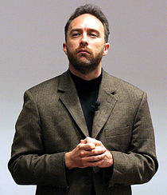

Wikipedia
|
Type of site
|
Internet encyclopedia |
|---|---|
| Available in | 292 languages |
| Owner | Wikimedia Foundation |
| Created by | Jimmy Wales, Larry Sanger[1] |
| Slogan(s) | The free encyclopedia that anyone can edit |
| Website | wikipedia |
| Alexa rank | Global: |
| Commercial | No |
| Registration | Optional[notes 2] |
| Users | >289,564 active users[notes 3] and >65,524,290 registered users |
| Launched | January 15, 2001 |
| Current status | Active |
|
Content license
|
CC Attribution / Share-Alike 3.0 Most text is also dual-licensed under GFDL; media licensing varies |
| Written in | LAMP platform[3] |
| OCLC number | 52075003 |
Wikipedia ( i/ˌwɪkᵻˈpiːdiə/ or
i/ˌwɪkᵻˈpiːdiə/ or  i/ˌwɪkiˈpiːdiə/ WIK-i-PEE-dee-ə) is a free online encyclopedia that aims to allow anyone to edit any article[4] and create them.[5] Wikipedia is the largest and most popular general reference work on the Internet[6][7][8] and is ranked among the ten most popular websites.[2] Wikipedia is owned by the nonprofit Wikimedia Foundation.[9][10][11]
i/ˌwɪkiˈpiːdiə/ WIK-i-PEE-dee-ə) is a free online encyclopedia that aims to allow anyone to edit any article[4] and create them.[5] Wikipedia is the largest and most popular general reference work on the Internet[6][7][8] and is ranked among the ten most popular websites.[2] Wikipedia is owned by the nonprofit Wikimedia Foundation.[9][10][11]
Wikipedia was launched on January 15, 2001, by Jimmy Wales and Larry Sanger.[12] Sanger[13] coined its name,[14] a portmanteau of wiki[notes 4] and encyclopedia. There was only the English language version initially, but it quickly developed similar versions in other languages, which differ in content and in editing practices. With 5,308,045 articles, the English Wikipedia is the largest of the more than 290 Wikipedia encyclopedias. Overall, Wikipedia consists of more than 40 million articles in more than 250 different languages[16] and as of February 2014[update], it had 18 billion page views and nearly 500 million unique visitors each month.[17]
In 2005, Nature published a peer review comparing 42 science articles from Encyclopædia Britannica and Wikipedia, and found that Wikipedia's level of accuracy approached Encyclopædia Britannica's.[18] Criticism of Wikipedia includes claims that it exhibits systemic bias, presents a mixture of "truths, half truths, and some falsehoods",[19] and that in controversial topics, it is subject to manipulation and spin.[20]
Contents
- 1 History
- 2 Openness
- 3 Policies and laws
- 4 Governance
- 5 Community
- 6 Language editions
- 7 Critical reception
- 8 Operation
- 8.1 Wikimedia Foundation and Wikimedia movement affiliates
- 8.2 Software operations and support
- 8.3 Automated editing
- 8.4 Wikiprojects, and assessments of articles' importance and quality
- 8.5 Hardware operations and support
- 8.6 Internal research and operational development
- 8.7 Internal news publications
- 9 Access to content
- 10 Cultural impact
- 11 Related projects
- 12 See also
- 13 References
- 14 Further reading
- 15 External links
History
Nupedia
Other collaborative online encyclopedias were attempted before Wikipedia, but none were so successful.[21]
Wikipedia began as a complementary project for Nupedia, a free online English-language encyclopedia project whose articles were written by experts and reviewed under a formal process.[12] Nupedia was founded on March 9, 2000, under the ownership of Bomis, a web portal company. Its main figures were Jimmy Wales, the CEO of Bomis, and Larry Sanger, editor-in-chief for Nupedia and later Wikipedia. Nupedia was licensed initially under its own Nupedia Open Content License, switching to the GNU Free Documentation License before Wikipedia's founding at the urging of Richard Stallman.[22] Sanger and Wales founded Wikipedia.[23][24] While Wales is credited with defining the goal of making a publicly editable encyclopedia,[25][26] Sanger is credited with the strategy of using a wiki to reach that goal.[27] On January 10, 2001, Sanger proposed on the Nupedia mailing list to create a wiki as a "feeder" project for Nupedia.[28]

| The Great Book of Knowledge, Part 1, Ideas with Paul Kennedy, CBC, January 15, 2014 |
Launch and early growth
Wikipedia was launched on January 15, 2001, as a single English-language edition at www.wikipedia.com,[29] and announced by Sanger on the Nupedia mailing list.[25] Wikipedia's policy of "neutral point-of-view"[30] was codified in its first months. Otherwise, there were relatively few rules initially and Wikipedia operated independently of Nupedia.[25] Originally, Bomis intended to make Wikipedia a business for profit.[31]
Wikipedia gained early contributors from Nupedia, Slashdot postings, and web search engine indexing. By August 8, 2001, Wikipedia had over 8,000 articles.[32] On September 25, 2001, Wikipedia had over 13,000 articles.[33] By the end of 2001, it had grown to approximately 20,000 articles and 18 language editions. It had reached 26 language editions by late 2002, 46 by the end of 2003, and 161 by the final days of 2004.[34] Nupedia and Wikipedia coexisted until the former's servers were taken down permanently in 2003, and its text was incorporated into Wikipedia. The English Wikipedia passed the mark of two million articles on September 9, 2007, making it the largest encyclopedia ever assembled, surpassing even the 1408 Yongle Encyclopedia, which had held the record for almost 600 years.[35]
Citing fears of commercial advertising and lack of control in Wikipedia, users of the Spanish Wikipedia forked from Wikipedia to create the Enciclopedia Libre in February 2002.[36] These moves encouraged Wales to announce that Wikipedia would not display advertisements, and to change Wikipedia's domain from wikipedia.com to wikipedia.org.[37]
Though the English Wikipedia reached three million articles in August 2009, the growth of the edition, in terms of the numbers of articles and of contributors, appears to have peaked around early 2007.[38] Around 1,800 articles were added daily to the encyclopedia in 2006; by 2013 that average was roughly 800.[39] A team at the Palo Alto Research Center attributed this slowing of growth to the project's increasing exclusivity and resistance to change.[40] Others suggest that the growth is flattening naturally because articles that could be called "low-hanging fruit"—topics that clearly merit an article—have already been created and built up extensively.[41][42][43]
In November 2009, a researcher at the Rey Juan Carlos University in Madrid (Spain) found that the English Wikipedia had lost 49,000 editors during the first three months of 2009; in comparison, the project lost only 4,900 editors during the same period in 2008.[44][45] The Wall Street Journal cited the array of rules applied to editing and disputes related to such content among the reasons for this trend.[46] Wales disputed these claims in 2009, denying the decline and questioning the methodology of the study.[47] Two years later, in 2011, Wales acknowledged the presence of a slight decline, noting a decrease from "a little more than 36,000 writers" in June 2010 to 35,800 in June 2011. In the same interview, Wales also claimed the number of editors was "stable and sustainable".[48] A 2013 article titled "The Decline of Wikipedia" in MIT's Technology Review questioned this claim. The article revealed that since 2007, Wikipedia had lost a third of the volunteer editors who update and correct the online encyclopedia and those still there have focused increasingly on minutiae.[49] In July 2012, the Atlantic reported that the number of administrators is also in decline.[50] In the November 25, 2013, issue of New York magazine, Katherine Ward stated "Wikipedia, the sixth-most-used website, is facing an internal crisis".[51]
Recent milestones
In January 2007, Wikipedia entered for the first time the top-ten list of the most popular websites in the United States, according to comScore Networks. With 42.9 million unique visitors, Wikipedia was ranked number 9, surpassing the New York Times (#10) and Apple (#11). This marked a significant increase over January 2006, when the rank was number 33, with Wikipedia receiving around 18.3 million unique visitors.[52] As of March 2015[update], Wikipedia has rank 5[2][53] among websites in terms of popularity according to Alexa Internet. In 2014, it received 8 billion pageviews every month.[54] On February 9, 2014, The New York Times reported that Wikipedia has 18 billion page views and nearly 500 million unique visitors a month, "according to the ratings firm comScore."[17]
On January 18, 2012, the English Wikipedia participated in a series of coordinated protests against two proposed laws in the United States Congress—the Stop Online Piracy Act (SOPA) and the PROTECT IP Act (PIPA)—by blacking out its pages for 24 hours.[55] More than 162 million people viewed the blackout explanation page that temporarily replaced Wikipedia content.[56][57]
Loveland and Reagle argue that, in process, Wikipedia follows a long tradition of historical encyclopedias that accumulated improvements piecemeal through "stigmergic accumulation".[58][59]
On January 20, 2014, Subodh Varma reporting for The Economic Times indicated that not only had Wikipedia's growth flattened but that it has "lost nearly 10 per cent of its page-views last year. That's a decline of about 2 billion between December 2012 and December 2013. Its most popular versions are leading the slide: page-views of the English Wikipedia declined by 12 per cent, those of German version slid by 17 per cent and the Japanese version lost 9 per cent."[60] Varma added that, "While Wikipedia's managers think that this could be due to errors in counting, other experts feel that Google's Knowledge Graphs project launched last year may be gobbling up Wikipedia users."[60] When contacted on this matter, Clay Shirky, associate professor at New York University and fellow at Harvard's Berkman Center for Internet and Security indicated that he suspected much of the page view decline was due to Knowledge Graphs, stating, "If you can get your question answered from the search page, you don't need to click [any further]."[60]
Openness
.png/220px-History_Comparison_Example_(Vector).png)
Unlike traditional encyclopedias, Wikipedia follows the procrastination principle[notes 5][62] regarding the security of its content.[62] It started almost entirely open—anyone could create articles, and any Wikipedia article could be edited by any reader, even those who did not have a Wikipedia account. Modifications to all articles would be published immediately. As a result, any article could contain inaccuracies such as errors, ideological biases, and nonsensical or irrelevant text.
Restrictions
Due to the increasing popularity of Wikipedia, popular editions, including the English version, have introduced editing restrictions in some cases. For instance, on the English Wikipedia and some other language editions, only registered users may create a new article.[63] On the English Wikipedia, among others, some particularly controversial, sensitive and/or vandalism-prone pages have been protected to some degree.[64][65] A frequently vandalized article can be semi-protected, meaning that only autoconfirmed editors are able to modify it.[66] A particularly contentious article may be locked so that only administrators are able to make changes.[67]
In certain cases, all editors are allowed to submit modifications, but review is required for some editors, depending on certain conditions. For example, the German Wikipedia maintains "stable versions" of articles,[68] which have passed certain reviews. Following protracted trials and community discussion, the English Wikipedia introduced the "pending changes" system in December 2012.[69] Under this system, new and unregistered users' edits to certain controversial or vandalism-prone articles are reviewed by established users before they are published.[70]
Review of changes
Although changes are not systematically reviewed, the software that powers Wikipedia provides certain tools allowing anyone to review changes made by others. The "History" page of each article links to each revision.[notes 6][71] On most articles, anyone can undo others' changes by clicking a link on the article's history page. Anyone can view the latest changes to articles, and anyone may maintain a "watchlist" of articles that interest them so they can be notified of any changes. "New pages patrol" is a process whereby newly created articles are checked for obvious problems.[72]
In 2003, economics PhD student Andrea Ciffolilli argued that the low transaction costs of participating in a wiki create a catalyst for collaborative development, and that features such as allowing easy access to past versions of a page favor "creative construction" over "creative destruction".[73]
Vandalism
Any edit that changes content in a way that deliberately compromises the integrity of Wikipedia is considered vandalism. The most common and obvious types of vandalism include insertion of obscenities and crude humor. Vandalism can also include advertising language and other types of spam.[74] Sometimes editors commit vandalism by removing information or entirely blanking a given page. Less common types of vandalism, such as the deliberate addition of plausible but false information to an article, can be more difficult to detect. Vandals can introduce irrelevant formatting, modify page semantics such as the page's title or categorization, manipulate the underlying code of an article, or use images disruptively.[75]

Obvious vandalism is generally easy to remove from Wikipedia articles; the median time to detect and fix vandalism is a few minutes.[76][77] However, some vandalism takes much longer to repair.[78]
In the Seigenthaler biography incident, an anonymous editor introduced false information into the biography of American political figure John Seigenthaler in May 2005. Seigenthaler was falsely presented as a suspect in the assassination of John F. Kennedy.[78] The article remained uncorrected for four months.[78] Seigenthaler, the founding editorial director of USA Today and founder of the Freedom Forum First Amendment Center at Vanderbilt University, called Wikipedia co-founder Jimmy Wales and asked whether he had any way of knowing who contributed the misinformation. Wales replied that he did not, although the perpetrator was eventually traced.[79][80] After the incident, Seigenthaler described Wikipedia as "a flawed and irresponsible research tool".[78] This incident led to policy changes at Wikipedia, specifically targeted at tightening up the verifiability of biographical articles of living people.[81]
Policies and laws
- See also: Wikipedia:Five Pillars
|  | |
Content in Wikipedia is subject to the laws (in particular, copyright laws) of the United States and of the U.S. state of Virginia, where the majority of Wikipedia's servers are located. Beyond legal matters, the editorial principles of Wikipedia are embodied in the "five pillars" and in numerous policies and guidelines intended to appropriately shape content. Even these rules are stored in wiki form, and Wikipedia editors write and revise the website's policies and guidelines.[82] Editors can enforce these rules by deleting or modifying non-compliant material. Originally, rules on the non-English editions of Wikipedia were based on a translation of the rules for the English Wikipedia. They have since diverged to some extent.[68]
Content policies and guidelines
According to the rules on the English Wikipedia, each entry in Wikipedia must be about a topic that is encyclopedic and is not a dictionary entry or dictionary-like.[83] A topic should also meet Wikipedia's standards of "notability",[84] which generally means that the topic must have been covered in mainstream media or major academic journal sources that are independent of the article's subject. Further, Wikipedia intends to convey only knowledge that is already established and recognized.[85] It must not present original research. A claim that is likely to be challenged requires a reference to a reliable source. Among Wikipedia editors, this is often phrased as "verifiability, not truth" to express the idea that the readers, not the encyclopedia, are ultimately responsible for checking the truthfulness of the articles and making their own interpretations.[86] This can at times lead to the removal of information that is valid.[87] Finally, Wikipedia must not take sides.[88] All opinions and viewpoints, if attributable to external sources, must enjoy an appropriate share of coverage within an article.[89] This is known as neutral point of view (NPOV).
Governance
Wikipedia's initial anarchy integrated democratic and hierarchical elements over time.[90][91] An article is not considered to be owned by its creator or any other editor and is not vetted by any recognized authority.[92] Wikipedia's contributors avoid a tragedy of the commons by internalizing benefits. They do this by experiencing flow and identifying with and gaining status in the Wikipedia community.[93]
Administrators
Editors in good standing in the community can run for one of many levels of volunteer stewardship: this begins with "administrator",[94][95] privileged users who can delete pages, prevent articles from being changed in case of vandalism or editorial disputes, and try to prevent certain persons from editing. Despite the name, administrators are not supposed to enjoy any special privilege in decision-making; instead, their powers are mostly limited to making edits that have project-wide effects and thus are disallowed to ordinary editors, and to implement restrictions intended to prevent certain persons from making disruptive edits (such as vandalism).[96][97]
Fewer editors become administrators than in years past, in part because the process of vetting potential Wikipedia administrators has become more rigorous.[98]
Bureaucrats name new administrators, solely upon the recommendations from the community.
Dispute resolution
Wikipedians may dispute, for example by repeatedly making opposite changes to an article.[99][100][101] Over time, Wikipedia has developed documentation for editors about dispute resolution. In order to determine community consensus, editors can raise issues at the Village Pump, or initiate a request for comment.
Arbitration Committee
The Arbitration Committee presides over the ultimate dispute resolution process. Although disputes usually arise from a disagreement between two opposing views on how an article should read, the Arbitration Committee explicitly refuses to directly rule on the specific view that should be adopted. Statistical analyses suggest that the committee ignores the content of disputes and rather focuses on the way disputes are conducted,[102] functioning not so much to resolve disputes and make peace between conflicting editors, but to weed out problematic editors while allowing potentially productive editors back in to participate. Therefore, the committee does not dictate the content of articles, although it sometimes condemns content changes when it deems the new content violates Wikipedia policies (for example, if the new content is considered biased). Its remedies include cautions and probations (used in 63% of cases) and banning editors from articles (43%), subject matters (23%) or Wikipedia (16%). Complete bans from Wikipedia are generally limited to instances of impersonation and anti-social behavior. When conduct is not impersonation or anti-social, but rather anti-consensus or in violation of editing policies, remedies tend to be limited to warnings.[103]
Community
Each article and each user of Wikipedia has an associated "Talk" page. These form the primary communication channel for editors to discuss, coordinate and debate.[104]
Wikipedia's community has been described as cult-like,[105] although not always with entirely negative connotations.[106] The project's preference for cohesiveness, even if it requires compromise that includes disregard of credentials, has been referred to as "anti-elitism".[107]
Wikipedians sometimes award one another virtual barnstars for good work. These personalized tokens of appreciation reveal a wide range of valued work extending far beyond simple editing to include social support, administrative actions, and types of articulation work.[108]
Wikipedia does not require that its editors and contributors provide identification.[109] As Wikipedia grew, "Who writes Wikipedia?" became one of the questions frequently asked on the project.[110] Jimmy Wales once argued that only "a community ... a dedicated group of a few hundred volunteers" makes the bulk of contributions to Wikipedia and that the project is therefore "much like any traditional organization".[111] In 2008, a Slate magazine article reported that: "According to researchers in Palo Alto, 1 percent of Wikipedia users are responsible for about half of the site's edits."[112] This method of evaluating contributions was later disputed by Aaron Swartz, who noted that several articles he sampled had large portions of their content (measured by number of characters) contributed by users with low edit counts.[113]
The English Wikipedia has 5,308,045 articles, 29,761,242 registered editors, and 129,764 active editors. An editor is considered active if they have made one or more edits in the past thirty days.
Editors who fail to comply with Wikipedia cultural rituals, such as signing talk page comments, may implicitly signal that they are Wikipedia outsiders, increasing the odds that Wikipedia insiders may target or discount their contributions. Becoming a Wikipedia insider involves non-trivial costs: the contributor is expected to learn Wikipedia-specific technological codes, submit to a sometimes convoluted dispute resolution process, and learn a "baffling culture rich with in-jokes and insider references". Editors who do not log in are in some sense second-class citizens on Wikipedia,[114] as "participants are accredited by members of the wiki community, who have a vested interest in preserving the quality of the work product, on the basis of their ongoing participation",[115] but the contribution histories of anonymous unregistered editors recognized only by their IP addresses cannot be attributed to a particular editor with certainty.
A 2007 study by researchers from Dartmouth College found that "anonymous and infrequent contributors to Wikipedia […] are as reliable a source of knowledge as those contributors who register with the site".[116] Jimmy Wales stated in 2009 that "(I)t turns out over 50% of all the edits are done by just .7% of the users... 524 people... And in fact the most active 2%, which is 1400 people, have done 73.4% of all the edits."[111] However, Business Insider editor and journalist Henry Blodget showed in 2009 that in a random sample of articles, most content in Wikipedia (measured by the amount of contributed text that survives to the latest sampled edit) is created by "outsiders", while most editing and formatting is done by "insiders".[111]
A 2008 study found that Wikipedians were less agreeable, open, and conscientious than others,[117][118] although a later commentary pointed out serious flaws, including that the data showed higher openness, that the differences with the control group were small as were the samples.[119] According to a 2009 study, there is "evidence of growing resistance from the Wikipedia community to new content".[120]
Diversity
One study found that the contributor base to Wikipedia "was barely 13% women; the average age of a contributor was in the mid-20s".[121] A 2011 study by researchers from the University of Minnesota found that females comprised 16.1% of the 38,497 editors who started editing Wikipedia during 2009.[122] In a January 2011 New York Times article, Noam Cohen observed that just 13% of Wikipedia's contributors are female according to a 2008 Wikimedia Foundation survey.[123] Sue Gardner, a former executive director of the Wikimedia Foundation, hoped to see female contributions increase to twenty-five percent by 2015.[124] Linda Basch, president of the National Council for Research on Women, noted the contrast in these Wikipedia editor statistics with the percentage of women currently completing bachelor's degrees, master's degrees and PhD programs in the United States (all at rates of 50 percent or greater).[125]
In response, various universities have hosted edit-a-thons to encourage more women to participate in the Wikipedia community. In fall 2013, 15 colleges and universities, including Yale, Brown, and Pennsylvania State, offered college credit for students to "write feminist thinking" about technology into Wikipedia.[126]
In August 2014, Wikipedia co-founder Jimmy Wales said in a BBC interview that the Wikimedia Foundation was "... really doubling down our efforts ..." to reach 25% of female editors (originally targeted by 2015), since the Foundation had "totally failed" so far. Wales said "a lot of things need to happen ... a lot of outreach, a lot of software changes".[127]
Language editions
There are currently 295 language editions of Wikipedia (also called language versions, or simply Wikipedias). Thirteen of these have over one million articles each (English, Swedish, Cebuano, German, Dutch, French, Russian, Italian, Spanish, Waray-Waray, Polish, Vietnamese and Japanese), five more have over 500,000 articles (Portuguese, Chinese, Ukrainian, Catalan and Persian), 40 more have over 100,000 articles, and 76 more have over 10,000 articles.[128][129] The largest, the English Wikipedia, has over 5.3 million articles. As of December 2016[update], according to Alexa, the English subdomain (en.wikipedia.org; English Wikipedia) receives approximately 55% of Wikipedia's cumulative traffic, with the remaining split among the other languages (Russian: 8%; Spanish: 7%; Japanese: 6%; French: 4%).[2] As of December 2016, the six largest language editions are (in order of article count) the English, Swedish, Cebuano, German, Dutch, and French Wikipedias.[130]

Distribution of the 42,906,012 articles in different language editions (as of 14 December 2016)[131]
| 0.1 | 0.3 | 1 | 3 | ||||||||||||||||||||||||
|
|||||||||||||||||||||||||||
The unit for the numbers in bars is articles. Since Wikipedia is based on the Web and therefore worldwide, contributors to the same language edition may use different dialects or may come from different countries (as is the case for the English edition). These differences may lead to some conflicts over spelling differences (e.g. colour versus color)[133] or points of view.[134]
Though the various language editions are held to global policies such as "neutral point of view", they diverge on some points of policy and practice, most notably on whether images that are not licensed freely may be used under a claim of fair use.[135][136][137]
Jimmy Wales has described Wikipedia as "an effort to create and distribute a free encyclopedia of the highest possible quality to every single person on the planet in their own language".[138] Though each language edition functions more or less independently, some efforts are made to supervise them all. They are coordinated in part by Meta-Wiki, the Wikimedia Foundation's wiki devoted to maintaining all of its projects (Wikipedia and others).[139] For instance, Meta-Wiki provides important statistics on all language editions of Wikipedia,[140] and it maintains a list of articles every Wikipedia should have.[141] The list concerns basic content by subject: biography, history, geography, society, culture, science, technology, and mathematics. As for the rest, it is not rare for articles strongly related to a particular language not to have counterparts in another edition. For example, articles about small towns in the United States might only be available in English, even when they meet notability criteria of other language Wikipedia projects.
Translated articles represent only a small portion of articles in most editions, in part because fully automated translation of articles is disallowed.[142] Articles available in more than one language may offer "interwiki links", which link to the counterpart articles in other editions.
A study published by PLOS ONE in 2012 also estimated the share of contributions to different editions of Wikipedia from different regions of the world. It reported that the proportion of the edits made from North America was 51% for the English Wikipedia, and 25% for the simple English Wikipedia.[143] The Wikimedia Foundation hopes to increase the number of editors in the Global South to thirty-seven percent by 2015.[144]
On March 1, 2014, The Economist in an article titled "The Future of Wikipedia" cited a trend analysis concerning data published by Wikimedia stating that: "The number of editors for the English-language version has fallen by a third in seven years."[145] The attrition rate for active editors in English Wikipedia was cited by The Economist as substantially in contrast to statistics for Wikipedia in other languages (non-English Wikipedia). The Economist reported that the number of contributors with an average of five of more edits per month was relatively constant since 2008 for Wikipedia in other languages at approximately 42,000 editors within narrow seasonal variances of about 2,000 editors up or down. The attrition rates for editors in English Wikipedia, by sharp comparison, were cited as peaking in 2007 at approximately 50,000 editors which has dropped to 30,000 editors as of the start of 2014. At the quoted trend rate, the number of active editors in English Wikipedia has lost approximately 20,000 editors to attrition since 2007, and the documented trend rate indicates the loss of another 20,000 editors by 2021, down to 10,000 active editors on English Wikipedia by 2021 if left unabated.[145] Given that the trend analysis published in The Economist presents the number of active editors for Wikipedia in other languages (non-English Wikipedia) as remaining relatively constant and successful in sustaining its numbers at approximately 42,000 active editors, the contrast has pointed to the effectiveness of Wikipedia in other languages to retain its active editors on a renewable and sustained basis.[145] No comment was made concerning which of the differentiated edit policy standards from Wikipedia in other languages (non-English Wikipedia) would provide a possible alternative to English Wikipedia for effectively ameliorating substantial editor attrition rates on the English language Wikipedia.[146]
Critical reception
Several Wikipedians have criticized Wikipedia's large and growing regulation, which includes over 50 policies and nearly 150,000 words as of 2014[update].[147][148]
Critics have stated that Wikipedia exhibits systemic bias. Columnist and journalist Edwin Black criticizes Wikipedia for being a mixture of "truth, half truth, and some falsehoods".[19] Articles in The Chronicle of Higher Education and The Journal of Academic Librarianship have criticized Wikipedia's Undue Weight policy, concluding that the fact that Wikipedia explicitly is not designed to provide correct information about a subject, but rather focus on all the major viewpoints on the subject and give less attention to minor ones, which creates omissions that can lead to false beliefs based on incomplete information.[149][150][151]
Journalists Oliver Kamm and Edwin Black noted how articles are dominated by the loudest and most persistent voices, usually by a group with an "ax to grind" on the topic.[19][152] An article in Education Next Journal concluded that as a resource about controversial topics, Wikipedia is notoriously subject to manipulation and spin.[20]
In 2006, the Wikipedia Watch criticism website listed dozens of examples of plagiarism in the English Wikipedia.[153]
Accuracy of content
Articles for traditional encyclopedias such as Encyclopædia Britannica are carefully and deliberately written by experts, lending such encyclopedias a reputation for accuracy.[154] Conversely, Wikipedia is often cited for factual inaccuracies and misrepresentations. However, a peer review in 2005 of forty-two scientific entries on both Wikipedia and Encyclopædia Britannica by the science journal Nature found few differences in accuracy, and concluded that "the average science entry in Wikipedia contained around four inaccuracies; Britannica, about three."[18] Reagle suggested that while the study reflects "a topical strength of Wikipedia contributors" in science articles, "Wikipedia may not have fared so well using a random sampling of articles or on humanities subjects."[155] The findings by Nature were disputed by Encyclopædia Britannica,[156][157] and in response, Nature gave a rebuttal of the points raised by Britannica.[158] In addition to the point-for-point disagreement between these two parties, others have examined the sample size and selection method used in the Nature effort, and suggested a "flawed study design" (in Nature's manual selection of articles, in part or in whole, for comparison), absence of statistical analysis (e.g., of reported confidence intervals), and a lack of study "statistical power" (i.e., owing to small sample size, 42 or 4 x 101 articles compared, vs >105 and >106 set sizes for Britannica and the English Wikipedia, respectively).[159]
As a consequence of the open structure, Wikipedia "makes no guarantee of validity" of its content, since no one is ultimately responsible for any claims appearing in it.[160] Concerns have been raised by PC World in 2009 regarding the lack of accountability that results from users' anonymity,[161] the insertion of false information,[162] vandalism, and similar problems.
Economist Tyler Cowen wrote: "If I had to guess whether Wikipedia or the median refereed journal article on economics was more likely to be true, after a not so long think I would opt for Wikipedia." He comments that some traditional sources of non-fiction suffer from systemic biases and novel results, in his opinion, are over-reported in journal articles and relevant information is omitted from news reports. However, he also cautions that errors are frequently found on Internet sites, and that academics and experts must be vigilant in correcting them.[163]
Critics argue that Wikipedia's open nature and a lack of proper sources for most of the information makes it unreliable.[164] Some commentators suggest that Wikipedia may be reliable, but that the reliability of any given article is not clear.[165] Editors of traditional reference works such as the Encyclopædia Britannica have questioned the project's utility and status as an encyclopedia.[166]
Wikipedia's open structure inherently makes it an easy target for Internet trolls, spammers, and various forms of paid advocacy seen as counterproductive to the maintenance of a neutral and verifiable online encyclopedia.[71][168] In response to paid advocacy editing and undisclosed editing issues, Wikipedia was reported in an article by Jeff Elder in The Wall Street Journal on June 16, 2014, to have strengthened its rules and laws against undisclosed editing.[169] The article stated that: "Beginning Monday [from date of article], changes in Wikipedia's terms of use will require anyone paid to edit articles to disclose that arrangement. Katherine Maher, the nonprofit Wikimedia Foundation's chief communications officer, said the changes address a sentiment among volunteer editors that, 'we're not an advertising service; we're an encyclopedia.'"[169][170][171][172][173] These issues, among others, had been parodied since the first decade of Wikipedia, notably by Stephen Colbert on The Colbert Report.[174]
Most university lecturers discourage students from citing any encyclopedia in academic work, preferring primary sources;[175] some specifically prohibit Wikipedia citations.[176][177] Wales stresses that encyclopedias of any type are not usually appropriate to use as citeable sources, and should not be relied upon as authoritative.[178] Wales once (2006 or earlier) said he receives about ten emails weekly from students saying they got failing grades on papers because they cited Wikipedia; he told the students they got what they deserved. "For God's sake, you're in college; don't cite the encyclopedia", he said.[179]
In February 2007, an article in The Harvard Crimson newspaper reported that a few of the professors at Harvard University were including Wikipedia articles in their syllabi, although without realizing the articles might change.[180] In June 2007, former president of the American Library Association Michael Gorman condemned Wikipedia, along with Google,[181] stating that academics who endorse the use of Wikipedia are "the intellectual equivalent of a dietitian who recommends a steady diet of Big Macs with everything".
A Harvard law textbook, Legal Research in a Nutshell (2011), cites Wikipedia as a "general source" that "can be a real boon" in "coming up to speed in the law governing a situation" and, "while not authoritative, can provide basic facts as well as leads to more in-depth resources".[182]
Medical information
On March 5, 2014, Julie Beck writing for The Atlantic magazine in an article titled "Doctors' #1 Source for Healthcare Information: Wikipedia", stated that "Fifty percent of physicians look up conditions on the (Wikipedia) site, and some are editing articles themselves to improve the quality of available information."[183] Beck continued to detail in this article new programs of Dr. Amin Azzam at the University of San Francisco to offer medical school courses to medical students for learning to edit and improve Wikipedia articles on health-related issues, as well as internal quality control programs within Wikipedia organized by Dr. James Heilman to improve a group of 200 health-related articles of central medical importance up to Wikipedia's highest standard of articles using its Featured Article and Good Article peer review evaluation process.[183] In a May 7, 2014, follow-up article in The Atlantic titled "Can Wikipedia Ever Be a Definitive Medical Text?", Julie Beck quotes Wikiproject Medicine's Dr. James Heilman as stating: "Just because a reference is peer-reviewed doesn't mean it's a high-quality reference."[184] Beck added that: "Wikipedia has its own peer review process before articles can be classified as 'good' or 'featured.' Heilman, who has participated in that process before, says 'less than 1 percent' of Wikipedia's medical articles have passed.[184]
Quality of writing
In 2008, researchers at Carnegie Mellon University found that the quality of a Wikipedia article would suffer rather than gain from adding more writers when the article lacked appropriate explicit or implicit coordination.[185] For instance, when contributors rewrite small portions of an entry rather than making full-length revisions, high- and low-quality content may be intermingled within an entry. Roy Rosenzweig, a history professor, stated that American National Biography Online outperformed Wikipedia in terms of its "clear and engaging prose", which, he said, was an important aspect of good historical writing.[186] Contrasting Wikipedia's treatment of Abraham Lincoln to that of Civil War historian James McPherson in American National Biography Online, he said that both were essentially accurate and covered the major episodes in Lincoln's life, but praised "McPherson's richer contextualization […] his artful use of quotations to capture Lincoln's voice […] and […] his ability to convey a profound message in a handful of words." By contrast, he gives an example of Wikipedia's prose that he finds "both verbose and dull". Rosenzweig also criticized the "waffling—encouraged by the npov policy—[which] means that it is hard to discern any overall interpretive stance in Wikipedia history". By example, he quoted the conclusion of Wikipedia's article on William Clarke Quantrill. While generally praising the article, he pointed out its "waffling" conclusion: "Some historians […] remember him as an opportunistic, bloodthirsty outlaw, while others continue to view him as a daring soldier and local folk hero."[186]
Other critics have made similar charges that, even if Wikipedia articles are factually accurate, they are often written in a poor, almost unreadable style. Frequent Wikipedia critic Andrew Orlowski commented: "Even when a Wikipedia entry is 100 per cent factually correct, and those facts have been carefully chosen, it all too often reads as if it has been translated from one language to another then into to a third, passing an illiterate translator at each stage."[187] A study of articles on cancer was undertaken in 2010 by Yaacov Lawrence of the Kimmel Cancer Center at Thomas Jefferson University limited to those Wikipedia articles which could be found in the Physician Data Query and excluding Wikipedia articles written at the "start" class or the "stub" class level. Lawrence found the articles accurate but not very readable, and thought that "Wikipedia's lack of readability (to non-college readers) may reflect its varied origins and haphazard editing".[188] The Economist argued that better-written articles tend to be more reliable: "inelegant or ranting prose usually reflects muddled thoughts and incomplete information".[189]
Coverage of topics and systemic bias
Wikipedia seeks to create a summary of all human knowledge in the form of an online encyclopedia, with each topic covered encyclopedically in one article. Since it has terabytes of disk space, it can have far more topics than can be covered by any printed encyclopedia.[190] The exact degree and manner of coverage on Wikipedia is under constant review by its editors, and disagreements are not uncommon (see deletionism and inclusionism).[191][192] Wikipedia contains materials that some people may find objectionable, offensive, or pornographic because Wikipedia is not censored. The policy has sometimes proved controversial: in 2008, Wikipedia rejected an online petition against the inclusion of images of Muhammad in the English edition of its Muhammad article, citing this policy. The presence of politically, religiously, and pornographically sensitive materials in Wikipedia has led to the censorship of Wikipedia by national authorities in China,[193] Pakistan,[194] and the United Kingdom,[195] among other countries.
A 2008 study conducted by researchers at Carnegie Mellon University and Palo Alto Research Center gave a distribution of topics as well as growth (from July 2006 to January 2008) in each field:[196]
- Culture and the arts: 30% (210%)
- Biographies and persons: 15% (97%)
- Geography and places: 14% (52%)
- Society and social sciences: 12% (83%)
- History and events: 11% (143%)
- Natural and physical sciences: 9% (213%)
- Technology and the applied sciences: 4% (−6%)
- Religions and belief systems: 2% (38%)
- Health: 2% (42%)
- Mathematics and logic: 1% (146%)
- Thought and philosophy: 1% (160%)
These numbers refer only to the quantity of articles: it is possible for one topic to contain a large number of short articles and another to contain a small number of large ones. Through its "Wikipedia Loves Libraries" program, Wikipedia has partnered with major public libraries such as the New York Public Library for the Performing Arts to expand its coverage of underrepresented subjects and articles.[197]
A 2011 study conducted by researchers at the University of Minnesota indicated that male and female editors focus on different coverage topics. There was a greater concentration of females in the People and Arts category, while males focus more on Geography and Science.[198]
Coverage of topics and selection bias
Research conducted by Mark Graham of the Oxford Internet Institute in 2009 indicated that the geographic distribution of article topics is highly uneven. Africa is most underrepresented.[199]
An editorial in The Guardian in 2014 noted that women porn stars are better covered than women writers as a further example.[200]
Systemic bias
When multiple editors contribute to one topic or set of topics, systemic bias may arise, due to the demographic backgrounds of the editors. In 2011, Wales noted that the unevenness of coverage is a reflection of the demography of the editors, which predominantly consists of young males with high education levels in the developed world (cf. previously).[48] The October 22, 2013 essay by Tom Simonite in MIT's Technology Review titled "The Decline of Wikipedia" discussed the effect of systemic bias and policy creep on the downward trend in the number of editors.[49]
Systemic bias on Wikipedia may follow that of culture generally, for example favoring certain nationalities, ethnicities or majority religions.[201] It may more specifically follow the biases of Internet culture, inclining to being young, male, English-speaking, educated, technologically aware, and wealthy enough to spare time for editing. Biases of its own may include over-emphasis on topics such as pop culture, technology, and current events.[201]
Taha Yasseri of the University of Oxford, in 2013, studied the statistical trends of systemic bias at Wikipedia introduced by editing conflicts and their resolution.[202][203] His research examined the counterproductive work behavior of edit warring. Yasseri contended that simple reverts or "undo" operations were not the most significant measure of counterproductive behavior at Wikipedia and relied instead on the statistical measurement of detecting "reverting/reverted pairs" or "mutually reverting edit pairs". Such a "mutually reverting edit pair" is defined where one editor reverts the edit of another editor who then, in sequence, returns to revert the first editor in the "mutually reverting edit pairs". The results were tabulated for several language versions of Wikipedia. The English Wikipedia's three largest conflict rates belonged to the articles George W. Bush, Anarchism and Muhammad.[203] By comparison, for the German Wikipedia, the three largest conflict rates at the time of the Oxford study were for the articles covering (i) Croatia, (ii) Scientology and (iii) 9/11 conspiracy theories.[203]
Explicit content
| “ | Problem? What problem? So, you didn't know that Wikipedia has a porn problem? | ” |
| — Larry Sanger, [204] | ||
Wikipedia has been criticized for allowing information of graphic content. Articles depicting arguably objectionable content (such as Feces, Cadaver, Human penis, Vulva, and Nudity) contain graphic pictures and detailed information easily available to anyone with access to the internet, including children.
The site also includes sexual content such as images and videos of masturbation and ejaculation, photographs of nude children, illustrations of zoophilia, and photos from hardcore pornographic films in its articles.
The Wikipedia article about Virgin Killer—a 1976 album from German heavy metal band Scorpions—features a picture of the album's original cover, which depicts a naked prepubescent girl. The original release cover caused controversy and was replaced in some countries. In December 2008, access to the Wikipedia article Virgin Killer was blocked for four days by most Internet service providers in the United Kingdom after it was reported by a member of the public as child pornography,[205] to the Internet Watch Foundation (IWF), which issues a stop list to Internet service providers. IWF, a non-profit, non-government-affiliated organization, later criticized the inclusion of the picture as "distasteful".[206]
In April 2010, Sanger wrote a letter to the Federal Bureau of Investigation, outlining his concerns that two categories of images on Wikimedia Commons contained child pornography, and were in violation of US federal obscenity law.[207] Sanger later clarified that the images, which were related to pedophilia and one about lolicon, were not of real children, but said that they constituted "obscene visual representations of the sexual abuse of children", under the PROTECT Act of 2003.[208] That law bans photographic child pornography and cartoon images and drawings of children that are obscene under American law.[208] Sanger also expressed concerns about access to the images on Wikipedia in schools.[209] Wikimedia Foundation spokesman Jay Walsh strongly rejected Sanger's accusation,[210] saying that Wikipedia did not have "material we would deem to be illegal. If we did, we would remove it."[210] Following the complaint by Sanger, Wales deleted sexual images without consulting the community. After some editors who volunteer to maintain the site argued that the decision to delete had been made hastily, Wales voluntarily gave up some of the powers he had held up to that time as part of his co-founder status. He wrote in a message to the Wikimedia Foundation mailing-list that this action was "in the interest of encouraging this discussion to be about real philosophical/content issues, rather than be about me and how quickly I acted".[211] Critics, including Wikipediocracy, noticed that many of the pornographic images deleted from Wikipedia since 2010 have reappeared.[212]
Privacy
One privacy concern in the case of Wikipedia is the right of a private citizen to remain a "private citizen" rather than a "public figure" in the eyes of the law.[213][notes 7] It is a battle between the right to be anonymous in cyberspace and the right to be anonymous in real life ("meatspace"). A particular problem occurs in the case of an individual who is relatively unimportant and for whom there exists a Wikipedia page against her or his wishes.
In January 2006, a German court ordered the German Wikipedia shut down within Germany because it stated the full name of Boris Floricic, aka "Tron", a deceased hacker. On February 9, 2006, the injunction against Wikimedia Deutschland was overturned, with the court rejecting the notion that Tron's right to privacy or that of his parents was being violated.[214]
Wikipedia has a "Volunteer Response Team" that uses the OTRS system to handle queries without having to reveal the identities of the involved parties. This is used, for example, in confirming the permission for using individual images and other media in the project.[215]
Sexism
Wikipedia has been described as harboring a battleground culture of sexism and harassment.[216][217] The perceived toxic attitudes and tolerance of violent and abusive language are also reasons put forth for the gender gap in Wikipedia editors.[218] In 2014, a female editor who requested a separate space on Wikipedia to discuss improving civility had her proposal referred to by a male editor using the words "the easiest way to avoid being called a cunt is not to act like one."[219]
Operation
A group of Wikipedia editors may form a WikiProject to focus their work on a specific topic area, using its associated discussion page to coordinate changes across multiple articles.[220]
Wikimedia Foundation and Wikimedia movement affiliates
Wikipedia is hosted and funded by the Wikimedia Foundation, a non-profit organization which also operates Wikipedia-related projects such as Wiktionary and Wikibooks. The foundation relies on public contributions and grants to fund its mission.[221] The foundation's 2013 IRS Form 990 shows revenue of $39.7 million and expenses of almost $29 million, with assets of $37.2 million and liabilities of about $2.3 million.[222]
In May 2014, Wikimedia Foundation named Lila Tretikov as its new executive director, taking over for Sue Gardner.[223] The Wall Street Journal reported on May 1, 2014, that Tretikov's information technology background from her years at University of California offers Wikipedia an opportunity to develop in more concentrated directions guided by her often repeated position statement that, "Information, like air, wants to be free."[224][225] The same Wall Street Journal article reported these directions of development according to an interview with spokesman Jay Walsh of Wikimedia who "said Tretikov would address that issue (paid advocacy) as a priority. 'We are really pushing toward more transparency... We are reinforcing that paid advocacy is not welcome.' Initiatives to involve greater diversity of contributors, better mobile support of Wikipedia, new geo-location tools to find local content more easily, and more tools for users in the second and third world are also priorities, Walsh said."[224]
Wikipedia is also supported by many organizations and groups that are affiliated with the Wikimedia Foundation but independently-run, called Wikimedia movement affiliates. These include Wikimedia chapters (which are national or sub-national organizations, such as Wikimedia Deutschland and Wikimédia France), thematic organizations (such as Amical Wikimedia for the Catalan language community), and user groups. These affiliates participate in the promotion, development, and funding of Wikipedia.
Software operations and support
The operation of Wikipedia depends on MediaWiki, a custom-made, free and open source wiki software platform written in PHP and built upon the MySQL database system.[226] The software incorporates programming features such as a macro language, variables, a transclusion system for templates, and URL redirection. MediaWiki is licensed under the GNU General Public License and it is used by all Wikimedia projects, as well as many other wiki projects. Originally, Wikipedia ran on UseModWiki written in Perl by Clifford Adams (Phase I), which initially required CamelCase for article hyperlinks; the present double bracket style was incorporated later. Starting in January 2002 (Phase II), Wikipedia began running on a PHP wiki engine with a MySQL database; this software was custom-made for Wikipedia by Magnus Manske. The Phase II software was repeatedly modified to accommodate the exponentially increasing demand. In July 2002 (Phase III), Wikipedia shifted to the third-generation software, MediaWiki, originally written by Lee Daniel Crocker.
Several MediaWiki extensions are installed[227] to extend the functionality of the MediaWiki software.
In April 2005, a Lucene extension[228][229] was added to MediaWiki's built-in search and Wikipedia switched from MySQL to Lucene for searching. The site currently uses Lucene Search 2.1,[230][needs update] which is written in Java and based on Lucene library 2.3.[231]
In July 2013, after extensive beta testing, a WYSIWYG (What You See Is What You Get) extension, VisualEditor, was opened to public use.[232][233][234][235] It was met with much rejection and criticism, and was described as "slow and buggy".[236] The feature was turned off afterward.
Automated editing
Computer programs called bots have been used widely to perform simple and repetitive tasks, such as correcting common misspellings and stylistic issues, or to start articles such as geography entries in a standard format from statistical data.[237][238][239] One controversial contributor massively creating articles with his bot was reported to create up to ten thousand articles on the Swedish Wikipedia on certain days.[240] There are also some bots designed to automatically warn editors making common editing errors (such as unmatched quotes or unmatched parenthesis).[241] Edits misidentified by a bot as the work of a banned editor can be restored by other editors. An anti-vandal bot tries to detect and revert vandalism quickly and automatically.[238] Bots can also report edits from particular accounts or IP address ranges, as was done at the time of the MH17 jet downing incident in July 2014.[242] Bots on Wikipedia must be approved prior to activation.[243]
According to Andrew Lih, the current expansion of Wikipedia to millions of articles would be difficult to envision without the use of such bots.[244]
Wikiprojects, and assessments of articles' importance and quality
A "WikiProject" is a group of contributors who want to work together as a team to improve Wikipedia. These groups often focus on a specific topic area (for example, women's history), a specific location or a specific kind of task (for example, checking newly created pages). The English Wikipedia currently has over 2,000 WikiProjects and activity varies.[245]
In 2007, in preparation for producing a print version, the English Wikipedia introduced an assessment scale of the quality of articles.[246] Articles are rated by Wikiprojects. The range of quality classes begins with "Stub" (very short pages), followed by "Start", "C" and "B" (in increasing order of quality). Community peer review is needed for the article to enter one of the highest quality classes: either "A", "good article" or the highest, "featured article". Of the about 4.4 million articles and lists assessed as of March 2015, a little more than 5000 (0.12%) are featured articles, and a little less than 2000 (0.04%) are featured lists. One featured article per day, as selected by editors, appears on the main page of Wikipedia.[247][248]
The articles can also be rated as per "importance" as judged by a Wikiproject. Currently, there are 5 importance categories: "low", "mid", "high", "top", and "???" for unclassified/unsure level. For a particular article, different Wikiprojects may assign different importance levels.
The Wikipedia Version 1.0 Editorial Team has developed a table (shown below) that displays data of all rated articles by quality and importance, on the English Wikipedia. If an article or list receives different ratings by two or more Wikiprojects, then the highest rating is used in the table, pie-charts, and bar-chart. The software regularly auto-updates the data.
Researcher Giacomo Poderi found that articles tend to reach featured status via the intensive work of a few editors.[249] A 2010 study found unevenness in quality among featured articles and concluded that the community process is ineffective in assessing the quality of articles.[250]
Quality-wise distribution of over 4.8 million articles and lists on the English Wikipedia, as of 3 April 2015[update][251]
| All rated articles by quality and importance | ||||||
|---|---|---|---|---|---|---|
| Quality | Importance | |||||
| Top | High | Mid | Low | ??? | Total | |
| 1,168 | 1,793 | 1,697 | 1,043 | 189 | 5,890 | |
| 141 | 561 | 650 | 600 | 116 | 2,068 | |
| 216 | 423 | 575 | 364 | 77 | 1,655 | |
| 2,059 | 4,694 | 9,173 | 9,864 | 1,684 | 27,474 | |
| B | 11,947 | 22,634 | 34,610 | 27,425 | 13,593 | 110,209 |
| C | 10,124 | 29,135 | 64,874 | 89,298 | 42,683 | 236,114 |
| Start | 17,107 | 75,069 | 302,413 | 770,264 | 288,240 | 1,453,093 |
| Stub | 4,214 | 30,501 | 224,402 | 1,827,083 | 836,572 | 2,922,772 |
| List | 2,980 | 11,074 | 33,647 | 90,970 | 60,915 | 199,586 |
| Assessed | 49,956 | 175,884 | 672,041 | 2,816,911 | 1,244,069 | 4,958,861 |
| Unassessed | 138 | 409 | 1,790 | 16,336 | 518,895 | 537,568 |
| Total | 50,094 | 176,293 | 673,831 | 2,833,247 | 1,762,964 | 5,496,429 |
- Featured articles
- Featured lists
- A-class articles
- Good articles
- B-class articles
- C-class articles
- Start-class articles
- Stub articles
- Lists
- Unassessed articles and lists
Hardware operations and support
Wikipedia receives between 25,000 and 60,000 page requests per second, depending on time of day.[252] As of 2008[update] page requests are first passed to a front-end layer of Squid caching servers.[253][needs update] Further statistics, based on a publicly available 3-month Wikipedia access trace, are available.[254] Requests that cannot be served from the Squid cache are sent to load-balancing servers running the Linux Virtual Server software, which in turn pass them to one of the Apache web servers for page rendering from the database. The web servers deliver pages as requested, performing page rendering for all the language editions of Wikipedia. To increase speed further, rendered pages are cached in a distributed memory cache until invalidated, allowing page rendering to be skipped entirely for most common page accesses.
Wikipedia currently runs on dedicated clusters of Linux servers (mainly Ubuntu).[255][256] As of December 2009[update], there were 300 in Florida and 44 in Amsterdam.[257] By January 22, 2013, Wikipedia had migrated its primary data center to an Equinix facility in Ashburn, Virginia.[258][259]
Internal research and operational development
|
|
This section possibly contains original research. (November 2016) (Learn how and when to remove this template message) |
In accordance with growing amounts of incoming donations exceeding seven digits in 2013 as recently reported,[49] the Foundation has reached a threshold of assets which qualify its consideration under the principles of industrial organization economics to indicate the need for the re-investment of donations into the internal research and development of the Foundation.[260] Two of the recent projects of such internal research and development have been the creation of a Visual Editor and a largely under-utilized "Thank" tab which were developed for the purpose of ameliorating issues of editor attrition, which have met with limited success.[49][236] The estimates for reinvestment by industrial organizations into internal research and development was studied by Adam Jaffe who recorded that the range of 4% to 25% annually was to be recommended, with high end technology requiring the higher level of support for internal reinvestment.[261] At the 2013 level of contributions for Wikimedia presently documented as 45 million dollars, the computed budget level recommended by Jaffe and Caballero for reinvestment into internal research and development is between 1.8 million and 11.3 million dollars annually.[261]
Internal news publications
Community-produced news publications include the English Wikipedia's The Signpost, founded in 2005 by Michael Snow, an attorney, Wikipedia administrator and former chair of the Wikimedia Foundation board of trustees.[262] It covers news and events from the site, as well as major events from other Wikimedia projects, such as Wikimedia Commons. Similar publications are the German-language Kurier, and the Portuguese-language Correio da Wikipédia. Other past and present community news publications on English Wikipedia include the "Wikiworld" web comic, the Wikipedia Weekly podcast, and newsletters of specific WikiProjects like The Bugle from WikiProject Military History and the monthly newsletter from The Guild of Copy Editors. There are also a number of publications from the Wikimedia Foundation and multilingual publications such as the Wikimedia Blog and This Month in Education.
Access to content
Content licensing
When the project was started in 2001, all text in Wikipedia was covered by the GNU Free Documentation License (GFDL), a copyleft license permitting the redistribution, creation of derivative works, and commercial use of content while authors retain copyright of their work.[263] The GFDL was created for software manuals that come with free software programs licensed under the GPL. This made it a poor choice for a general reference work: for example, the GFDL requires the reprints of materials from Wikipedia to come with a full copy of the GFDL text. In December 2002, the Creative Commons license was released: it was specifically designed for creative works in general, not just for software manuals. The license gained popularity among bloggers and others distributing creative works on the Web. The Wikipedia project sought the switch to the Creative Commons.[264] Because the two licenses, GFDL and Creative Commons, were incompatible, in November 2008, following the request of the project, the Free Software Foundation (FSF) released a new version of the GFDL designed specifically to allow Wikipedia to relicense its content to CC BY-SA by August 1, 2009. (A new version of the GFDL automatically covers Wikipedia contents.) In April 2009, Wikipedia and its sister projects held a community-wide referendum which decided the switch in June 2009.[265][266][267][268]
The handling of media files (e.g. image files) varies across language editions. Some language editions, such as the English Wikipedia, include non-free image files under fair use doctrine, while the others have opted not to, in part because of the lack of fair use doctrines in their home countries (e.g. in Japanese copyright law). Media files covered by free content licenses (e.g. Creative Commons' CC BY-SA) are shared across language editions via Wikimedia Commons repository, a project operated by the Wikimedia Foundation. Wikipedia's accommodation of varying international copyright laws regarding images has led some to observe that its photographic coverage of topics lags behind the quality of the encyclopedic text.[269]
The Wikimedia Foundation is not a licensor of content, but merely a hosting service for the contributors (and licensors) of the Wikipedia. This position has been successfully defended in court.[270][271]
Methods of access
Because Wikipedia content is distributed under an open license, anyone can reuse or re-distribute it at no charge. The content of Wikipedia has been published in many forms, both online and offline, outside of the Wikipedia website.
- Websites – Thousands of "mirror sites" exist that republish content from Wikipedia: two prominent ones, that also include content from other reference sources, are Reference.com and Answers.com. Another example is Wapedia, which began to display Wikipedia content in a mobile-device-friendly format before Wikipedia itself did.
- Mobile apps – A variety of mobile apps provide access to Wikipedia on hand-held devices, including both Android and iOS devices (see Wikipedia apps). (See also Mobile access.)
- Search engines – Some web search engines make special use of Wikipedia content when displaying search results: examples include Bing (via technology gained from Powerset)[272] and DuckDuckGo.
- Compact discs, DVDs – Collections of Wikipedia articles have been published on optical discs. An English version, 2006 Wikipedia CD Selection, contained about 2,000 articles.[273][274] The Polish-language version contains nearly 240,000 articles.[275] There are German- and Spanish-language versions as well.[276][277] Also, "Wikipedia for Schools", the Wikipedia series of CDs / DVDs produced by Wikipedians and SOS Children, is a free, hand-checked, non-commercial selection from Wikipedia targeted around the UK National Curriculum and intended to be useful for much of the English-speaking world.[278] The project is available online; an equivalent print encyclopedia would require roughly 20 volumes.
- Printed books – There are efforts to put a select subset of Wikipedia's articles into printed book form.[279][280] Since 2009, tens of thousands of print-on-demand books that reproduced English, German, Russian and French Wikipedia articles have been produced by the American company Books LLC and by three Mauritian subsidiaries of the German publisher VDM.[281]
- Semantic Web – The website DBpedia, begun in 2007, extracts data from the infoboxes and category declarations of the English-language Wikipedia. Wikimedia has created the Wikidata project with a similar objective of storing the basic facts from each page of Wikipedia and the other WMF wikis and make it available in a queriable semantic format, RDF. This is still under development. As of Feb 2014 it has 15,000,000 items and 1,000 properties for describing them.
Obtaining the full contents of Wikipedia for reuse presents challenges, since direct cloning via a web crawler is discouraged.[282] Wikipedia publishes "dumps" of its contents, but these are text-only; as of 2007[update] there was no dump available of Wikipedia's images.[283]
Several languages of Wikipedia also maintain a reference desk, where volunteers answer questions from the general public. According to a study by Pnina Shachaf in the Journal of Documentation, the quality of the Wikipedia reference desk is comparable to a standard library reference desk, with an accuracy of 55%.[284]
Mobile access

Wikipedia's original medium was for users to read and edit content using any standard web browser through a fixed Internet connection. Although Wikipedia content has been accessible through the mobile web since July 2013, The New York Times on February 9, 2014, quoted Erik Möller, deputy director of the Wikimedia Foundation, stating that the transition of internet traffic from desktops to mobile devices was significant and a cause for concern and worry.[17] The article in The New York Times reported the comparison statistics for mobile edits stating that, "Only 20 percent of the readership of the English-language Wikipedia comes via mobile devices, a figure substantially lower than the percentage of mobile traffic for other media sites, many of which approach 50 percent. And the shift to mobile editing has lagged even more."[17] The New York Times reports that Möller has assigned "a team of 10 software developers focused on mobile", out of a total of approximately 200 employees working at the Wikimedia Foundation. One principal concern cited by The New York Times for the "worry" is for Wikipedia to effectively address attrition issues with the number of editors which the online encyclopedia attracts to edit and maintain its content in a mobile access environment.[17]
Bloomberg BusinessWeek reported in July 2014 that Google's Android mobile apps have dominated the largest share of global smartphone shipments for 2013 with 78.6% of market share over their next closest competitor in iOS with 15.2% of the market.[285] At the time of the Tretikov appointment and her posted web interview with Sue Gardner in May 2014, Wikimedia representatives made a technical announcement concerning the number of mobile access systems in the market seeking access to Wikipedia. Directly after the posted web interview, the representatives stated that Wikimedia would be applying an all-inclusive approach to accommodate as many mobile access systems as possible in its efforts for expanding general mobile access, including BlackBerry and the Windows Phone system, making market share a secondary issue.[225] The latest version of the Android app for Wikipedia was released on July 23, 2014, to generally positive reviews, scoring over four of a possible five in a poll of approximately 200,000 users downloading from Google.[286] The latest version for iOS was released on April 3, 2013, to similar reviews.[287]
Access to Wikipedia from mobile phones was possible as early as 2004, through the Wireless Application Protocol (WAP), via the Wapedia service. In June 2007 Wikipedia launched en.mobile.wikipedia.org, an official website for wireless devices. In 2009 a newer mobile service was officially released,[288] located at en.m.wikipedia.org, which caters to more advanced mobile devices such as the iPhone, Android-based devices or WebOS-based devices. Several other methods of mobile access to Wikipedia have emerged. Many devices and applications optimize or enhance the display of Wikipedia content for mobile devices, while some also incorporate additional features such as use of Wikipedia metadata (See Wikipedia:Metadata), such as geoinformation.[289][290]
Wikipedia Zero is an initiative of the Wikimedia Foundation to expand the reach of the encyclopedia to the developing countries.[291]
Andrew Lih and Andrew Brown both maintain editing Wikipedia with smart phones is difficult and this discourages new potential contributors. Several years running the number of Wikipedia editors has been falling and Tom Simonite of MIT Technology Review claims the bureaucratic structure and rules are a factor in this. Simonite alleges some Wikipedians use the labyrinthine rules and guidelines to dominate others and those editors have a vested interest in keeping the status quo.[49] Lih alleges there is serious disagreement among existing contributors how to resolve this. Lih fears for Wikipedia's long term future while Brown fears problems with Wikipedia will remain and rival encyclopedias will not replace it.[292][293]
Cultural impact
Readership
Wikipedia is extremely popular. In February 2014, The New York Times reported that Wikipedia is ranked fifth globally among all websites, stating "With 18 billion page views and nearly 500 million unique visitors a month […] Wikipedia trails just Yahoo, Facebook, Microsoft and Google, the largest with 1.2 billion unique visitors."[17]
In addition to logistic growth in the number of its articles,[294] Wikipedia has steadily gained status as a general reference website since its inception in 2001.[295] About 50% of search engine traffic to Wikipedia comes from Google,[296] a good portion of which is related to academic research.[297] The number of readers of Wikipedia worldwide reached 365 million at the end of 2009.[298] The Pew Internet and American Life project found that one third of US Internet users consulted Wikipedia.[299] In 2011 Business Insider gave Wikipedia a valuation of $4 billion if it ran advertisements.[300]
According to "Wikipedia Readership Survey 2011", the average age of Wikipedia readers is 36, with a rough parity between genders. Almost half of Wikipedia readers visit the site more than five times a month, and a similar number of readers specifically look for Wikipedia in search engine results. About 47% of Wikipedia readers do not realize that Wikipedia is a non-profit organization.[301]
Cultural significance

Wikipedia's content has also been used in academic studies, books, conferences, and court cases.[302][303][304] The Parliament of Canada's website refers to Wikipedia's article on same-sex marriage in the "related links" section of its "further reading" list for the Civil Marriage Act.[305] The encyclopedia's assertions are increasingly used as a source by organizations such as the US federal courts and the World Intellectual Property Organization[306] – though mainly for supporting information rather than information decisive to a case.[307] Content appearing on Wikipedia has also been cited as a source and referenced in some US intelligence agency reports.[308] In December 2008, the scientific journal RNA Biology launched a new section for descriptions of families of RNA molecules and requires authors who contribute to the section to also submit a draft article on the RNA family for publication in Wikipedia.[309]
Wikipedia has also been used as a source in journalism,[310][311] often without attribution, and several reporters have been dismissed for plagiarizing from Wikipedia.[312][313][314]
In 2006, Time magazine recognized Wikipedia's participation (along with YouTube, Reddit, MySpace, and Facebook[315]) in the rapid growth of online collaboration and interaction by millions of people worldwide.
In July 2007 Wikipedia was the focus of a 30-minute documentary on BBC Radio 4[316] which argued that, with increased usage and awareness, the number of references to Wikipedia in popular culture is such that the word is one of a select band of 21st-century nouns that are so familiar (Google, Facebook, YouTube) that they no longer need explanation.
On September 28, 2007, Italian politician Franco Grillini raised a parliamentary question with the minister of cultural resources and activities about the necessity of freedom of panorama. He said that the lack of such freedom forced Wikipedia, "the seventh most consulted website", to forbid all images of modern Italian buildings and art, and claimed this was hugely damaging to tourist revenues.[317]

On September 16, 2007, The Washington Post reported that Wikipedia had become a focal point in the 2008 US election campaign, saying: "Type a candidate's name into Google, and among the first results is a Wikipedia page, making those entries arguably as important as any ad in defining a candidate. Already, the presidential entries are being edited, dissected and debated countless times each day."[318] An October 2007 Reuters article, titled "Wikipedia page the latest status symbol", reported the recent phenomenon of how having a Wikipedia article vindicates one's notability.[319]
Active participation also has an impact. Law students have been assigned to write Wikipedia articles as an exercise in clear and succinct writing for an uninitiated audience.[320]
A working group led by Peter Stone (formed as a part of the Stanford-based project One Hundred Year Study on Artificial Intelligence) in its report called Wikipedia "the best-known example of crowdsourcing... that far exceeds traditionally-compiled information sources, such as encyclopedias and dictionaries, in scale and depth."[321]
Awards
Wikipedia won two major awards in May 2004.[322] The first was a Golden Nica for Digital Communities of the annual Prix Ars Electronica contest; this came with a €10,000 (£6,588; $12,700) grant and an invitation to present at the PAE Cyberarts Festival in Austria later that year. The second was a Judges' Webby Award for the "community" category.[323] Wikipedia was also nominated for a "Best Practices" Webby award.
In 2007, readers of brandchannel.com voted Wikipedia as the fourth-highest brand ranking, receiving 15% of the votes in answer to the question "Which brand had the most impact on our lives in 2006?"[324]
In September 2008, Wikipedia received Quadriga A Mission of Enlightenment award of Werkstatt Deutschland along with Boris Tadić, Eckart Höfling, and Peter Gabriel. The award was presented to Wales by David Weinberger.[325]
In 2015, Wikipedia was awarded both the annual Erasmus Prize, which recognizes exceptional contributions to culture, society or social sciences,[326] and the Spanish Princess of Asturias Award on International Cooperation.[327] Speaking at the Asturian Parliament in Oviedo, the city that hosts the awards ceremony, Jimmy Wales praised the work of the Asturian language Wikipedia users.[328] The night of the ceremony, members of the Wikimedia Foundation held a meeting with Wikipedians from all parts of Spain, including the local Asturian community.
Satire
Many parodies target Wikipedia's openness and susceptibility to inserted inaccuracies, with characters vandalizing or modifying the online encyclopedia project's articles.
Comedian Stephen Colbert has parodied or referenced Wikipedia on numerous episodes of his show The Colbert Report and coined the related term wikiality, meaning "together we can create a reality that we all agree on—the reality we just agreed on".[174] Another example can be found in "Wikipedia Celebrates 750 Years of American Independence", a July 2006 front-page article in The Onion,[329] as well as the 2010 The Onion article "'L.A. Law' Wikipedia Page Viewed 874 Times Today".[330]
In an episode of the television comedy The Office U.S., which aired in April 2007, an incompetent office manager (Michael Scott) is shown relying on a hypothetical Wikipedia article for information on negotiation tactics in order to assist him in negotiating lesser pay for an employee.[331] The tactics he used failed, as a joke about the unreliability of Wikipedia and what anyone can do to change its contents. Viewers of the show tried to add the episode's mention of the page as a section of the actual Wikipedia article on negotiation, but this effort was prevented by other users on the article's talk page.[332]
"My Number One Doctor", a 2007 episode of the television show Scrubs, played on the perception that Wikipedia is an unreliable reference tool with a scene in which Dr. Perry Cox reacts to a patient who says that a Wikipedia article indicates that the raw food diet reverses the effects of bone cancer by retorting that the same editor who wrote that article also wrote the Battlestar Galactica episode guide.[333]
In 2008, the comedic website CollegeHumor produced a video sketch named "Professor Wikipedia", in which the fictitious Professor Wikipedia instructs a class with a medley of unverifiable and occasionally absurd statements.[334]
The Dilbert comic strip from May 8, 2009, features a character supporting an improbable claim by saying "Give me ten minutes and then check Wikipedia."[335]
In July 2009, BBC Radio 4 broadcast a comedy series called Bigipedia, which was set on a website which was a parody of Wikipedia. Some of the sketches were directly inspired by Wikipedia and its articles.[336]
In 2010, comedian Daniel Tosh encouraged viewers of his show, Tosh.0, to visit the show's Wikipedia article and edit it at will. On a later episode, he commented on the edits to the article, most of them offensive, which had been made by the audience and had prompted the article to be locked from editing.[337][338]
On August 23, 2013, the New Yorker website published a cartoon with this caption: "Dammit, Manning, have you considered the pronoun war that this is going to start on your Wikipedia page?"[339]
In December 2015, John Julius Norwich stated, in a letter published in The Times newspaper, that as an historian he resorted to Wikipedia "at least a dozen times a day", and had never yet caught it out. He described it as "a work of reference as useful as any in existence", with so wide a range that it is almost impossible to find a person, place or thing that it has left uncovered, and that he could never have written his last two books without it.[340][341]
Sister projects – Wikimedia
Wikipedia has also spawned several sister projects, which are also wikis run by the Wikimedia Foundation. These other Wikimedia projects include Wiktionary, a dictionary project launched in December 2002,[342] Wikiquote, a collection of quotations created a week after Wikimedia launched, Wikibooks, a collection of collaboratively written free textbooks and annotated texts, Wikimedia Commons, a site devoted to free-knowledge multimedia, Wikinews, for citizen journalism, and Wikiversity, a project for the creation of free learning materials and the provision of online learning activities.[343] Of these, only Commons has had success comparable to that of Wikipedia. Another sister project of Wikipedia, Wikispecies, is a catalogue of species. In 2012 Wikivoyage, an editable travel guide, and Wikidata, an editable knowledge base, launched.
Publishing
The most obvious economic effect of Wikipedia has been the death of commercial encyclopedias, especially the printed versions, e.g. Encyclopaedia Britannica, which were unable to compete with a product that is essentially free.[344][345][346] Nicholas Carr wrote a 2005 essay, "The amorality of Web 2.0", that criticized websites with user-generated content, like Wikipedia, for possibly leading to professional (and, in his view, superior) content producers' going out of business, because "free trumps quality all the time". Carr wrote: "Implicit in the ecstatic visions of Web 2.0 is the hegemony of the amateur. I for one can't imagine anything more frightening."[347] Others dispute the notion that Wikipedia, or similar efforts, will entirely displace traditional publications. For instance, Chris Anderson, the editor-in-chief of Wired Magazine, wrote in Nature that the "wisdom of crowds" approach of Wikipedia will not displace top scientific journals, with their rigorous peer review process.[348]
There is also an ongoing debate about the influence of Wikipedia on the biography publishing business. "The worry is that, if you can get all that information from Wikipedia, what's left for biography?" said Kathryn Hughes, professor of life writing at UEA and author of The Short Life and Long Times of Mrs Beeton and George Eliot: the Last Victorian.[349]
Scientific use
Wikipedia has seen been widely used as a corpus for linguistic research in computational linguistics, information retrieval and natural language processing. In particular, it commonly serves as a target knowledge base for the entity linking problem, which is then called "wikification",[350] and to the related problem of word sense disambiguation.[351] Methods similar to wikification can in turn be used to find "missing" links in Wikipedia.[352]
In 2015, French researchers Dr José Lages of the University of Franche-Comté in Besançon and Dima Shepelyansky of Paul Sabatier University in Toulouse published a global university ranking based on Wikipedia scholarly citations.[353][354][355] They used PageRank "followed by the number of appearances in the 24 different language editions of Wikipedia (descending order) and the century in which they were founded (ascending order)."[355]
Related projects
A number of interactive multimedia encyclopedias incorporating entries written by the public existed long before Wikipedia was founded. The first of these was the 1986 BBC Domesday Project, which included text (entered on BBC Micro computers) and photographs from over 1 million contributors in the UK, and covered the geography, art, and culture of the UK. This was the first interactive multimedia encyclopedia (and was also the first major multimedia document connected through internal links), with the majority of articles being accessible through an interactive map of the UK. The user interface and part of the content of the Domesday Project were emulated on a website until 2008.[356]
Several free-content, collaborative encyclopedias were created around the same period as Wikipedia (e.g. Everything2),[357] with many later being merged into the project (e.g. GNE).[358] One of the most successful early online encyclopedias incorporating entries by the public was h2g2, which was created by Douglas Adams in 1999. The h2g2 encyclopedia is relatively light-hearted, focusing on articles which are both witty and informative.
Subsequent collaborative knowledge websites have drawn inspiration from Wikipedia. Some, such as Susning.nu, Enciclopedia Libre, Hudong, and Baidu Baike likewise employ no formal review process, although some like Conservapedia are not as open. Others use more traditional peer review, such as Encyclopedia of Life and the online wiki encyclopedias Scholarpedia and Citizendium. The latter was started by Sanger in an attempt to create a reliable alternative to Wikipedia.[359][360]
See also
- Outline of Wikipedia – guide to the subject of Wikipedia presented as a tree structured list of its subtopics; for an outline of the contents of Wikipedia, see Portal:Contents/Outlines
- Conflict-of-interest editing on Wikipedia
- Democratization of knowledge
- Interpedia, an early proposal for a collaborative Internet encyclopedia
- List of Internet encyclopedias
- Network effect
- Print Wikipedia art project to visualize how big Wikipedia is. In cooperation with Wikimedia foundation.
- QRpedia – multilingual, mobile interface to Wikipedia
- Wikipedia Review
References
- ^ Sidener, Jonathan (December 6, 2004). "Everyone's Encyclopedia". U-T San Diego. Archived from the original on January 14, 2016. Retrieved October 15, 2006.
- ^ a b c d "How popular is wikipedia.org?". Alexa Internet. May 22, 2016. Retrieved 2016-09-04.
- ^ Roger Chapman. "Top 40 Website Programming Languages". roadchap.com. Archived from the original on September 22, 2013. Retrieved September 6, 2011.
- ^ "Wikipedia founder defends decision to encrypt the site in China". The Verge. Retrieved September 19, 2015.
- ^ Growing Wikipedia Refines Its 'Anyone Can Edit' Policy
- ^ Bill Tancer (May 1, 2007). "Look Who's Using Wikipedia". Time. Retrieved December 1, 2007.
The sheer volume of content […] is partly responsible for the site's dominance as an online reference. When compared to the top 3,200 educational reference sites in the US, Wikipedia is No. 1, capturing 24.3% of all visits to the category
. Cf. Bill Tancer (Global Manager, Hitwise), "Wikipedia, Search and School Homework", Hitwise, March 1, 2007. - ^ Alex Woodson (July 8, 2007). "Wikipedia remains go-to site for online news". Reuters. Retrieved December 16, 2007.
Online encyclopedia Wikipedia has added about 20 million unique monthly visitors in the past year, making it the top online news and information destination, according to Nielsen//NetRatings.
- ^ "comScore MMX Ranks Top 50 US Web Properties for August 2012". comScore. September 12, 2012. Retrieved February 6, 2013.
- ^ "Wikimedia pornography row deepens as Wales cedes rights – BBC News". BBC. Retrieved 28 June 2016.
- ^ "The Mysterious Workings of Wikis: Who Owns What?". Ecommercetimes.com. Retrieved 28 June 2016.
- ^ "Wikimedia Foundation employee ousted over paid editing". Ars Technica. Retrieved 28 June 2016.
- ^ a b Kock, N., Jung, Y., & Syn, T. (2016). Wikipedia and e-Collaboration Research: Opportunities and Challenges. International Journal of e-Collaboration (IJeC), 12(2), 1-8.
- ^ Mike Miliard (March 1, 2008). "Wikipediots: Who Are These Devoted, Even Obsessive Contributors to Wikipedia?". Salt Lake City Weekly. Retrieved December 18, 2008.
- ^ Sidener, Jonathan (October 9, 2006). "Wikipedia family feud rooted in San Diego". The San Diego Union-Tribune. Archived from the original on November 11, 2016. Retrieved May 5, 2009.
- ^ "Wiki" in the Hawaiian Dictionary, revised and enlarged edition, University of Hawaii Press, 1986
- ^ "Wikipedia cofounder Jimmy Wales on 60 Minutes". CBS News. Retrieved April 6, 2015.
- ^ a b c d e f Cohen, Noam (February 9, 2014). "Wikipedia vs. the Small Screen". The New York Times.
- ^ a b Jim Giles (December 2005). "Internet encyclopedias go head to head". Nature. 438 (7070): 900–901. Bibcode:2005Natur.438..900G. doi:10.1038/438900a. PMID 16355180.(subscription required) Note: The study was cited in several news articles; e.g.:
- "Wikipedia survives research test". BBC News. December 15, 2005.
- ^ a b c Black, Edwin (April 19, 2010) Wikipedia—The Dumbing Down of World Knowledge, History News Network Retrieved October 21, 2014
- ^ a b J. Petrilli , Michael (SPRING 2008/Vol.8, No.2) Wikipedia or Wickedpedia?, Education Next Retrieved October 22, 2014
- ^ "The contribution conundrum: Why did Wikipedia succeed while other encyclopedias failed?". Nieman Lab. Retrieved 2016-06-05.
- ^ Richard M. Stallman (June 20, 2007). "The Free Encyclopedia Project". Free Software Foundation. Retrieved January 4, 2008.
- ^ Jonathan Sidener (December 6, 2004). "Everyone's Encyclopedia". U-T San Diego. Archived from the original on October 11, 2007. Retrieved October 15, 2006.
- ^ Meyers, Peter (September 20, 2001). "Fact-Driven? Collegial? This Site Wants You". The New York Times. Retrieved November 22, 2007.
'I can start an article that will consist of one paragraph, and then a real expert will come along and add three paragraphs and clean up my one paragraph,' said Larry Sanger of Las Vegas, who founded Wikipedia with Mr. Wales.
- ^ a b c Sanger, Larry (April 18, 2005). "The Early History of Nupedia and Wikipedia: A Memoir". Slashdot. Retrieved December 26, 2008.
- ^ Sanger, Larry (January 17, 2001). "Wikipedia Is Up!". Archived from the original on May 6, 2001. Retrieved December 26, 2008.
- ^ "Wikipedia-l: LinkBacks?". Retrieved February 20, 2007.
- ^ Sanger, Larry (January 10, 2001). "Let's Make a Wiki". Internet Archive. Archived from the original on April 14, 2003. Retrieved December 26, 2008.
- ^ "Wikipedia: HomePage". Archived from the original on March 31, 2001. Retrieved March 31, 2001.
- ^ "Wikipedia:Neutral point of view, Wikipedia (January 21, 2007).
- ^ Finkelstein, Seth (September 25, 2008). "Read me first: Wikipedia isn't about human potential, whatever Wales says". London: The Guardian.
- ^ "Wikipedia, August 8, 2001". Web.archive.bibalex.org. August 8, 2001. Archived from the original on 2001-08-08. Retrieved March 3, 2014.
- ^ "Wikipedia, September 25, 2001". Web.archive.bibalex.org. Archived from the original on 2001-10-10. Retrieved March 3, 2014.
- ^ "Multilingual statistics". Wikipedia. March 30, 2005. Retrieved December 26, 2008.
- ^ "Encyclopedias and Dictionaries". Encyclopædia Britannica. 18 (15th ed.). 2007. pp. 257–286.
- ^ "[long] Enciclopedia Libre: msg#00008". Osdir. Retrieved December 26, 2008.
- ^ Clay Shirky (February 28, 2008). Here Comes Everybody: The Power of Organizing Without Organizations. The Penguin Press via Amazon Online Reader. p. 273. ISBN 1-59420-153-6. Retrieved December 26, 2008.
- ^ Bobbie Johnson (August 12, 2009). "Wikipedia approaches its limits". The Guardian. London. Retrieved March 31, 2010.
- ^ Wikipedia:Modelling_Wikipedia_extended_growth
- ^ The Singularity is Not Near: Slowing Growth of Wikipedia (PDF). The International Symposium on Wikis. Orlando, Florida. 2009. Archived from the original (PDF) on May 11, 2011.
- ^ Evgeny Morozov (November–December 2009). "Edit This Page; Is it the end of Wikipedia". Boston Review.
- ^ Cohen, Noam (March 28, 2009). "Wikipedia – Exploring Fact City". The New York Times. Retrieved April 19, 2011.
- ^ Austin Gibbons, David Vetrano, Susan Biancani (2012). Wikipedia: Nowhere to grow

- ^ Jenny Kleeman (November 26, 2009). "Wikipedia falling victim to a war of words". The Guardian. London. Retrieved March 31, 2010.
- ^ "Wikipedia: A quantitative analysis". Archived from the original (PDF) on April 3, 2012.
- ^ Volunteers Log Off as Wikipedia Ages, The Wall Street Journal, November 27, 2009.
- ^ Barnett, Emma (November 26, 2009). "Wikipedia's Jimmy Wales denies site is 'losing' thousands of volunteer editors". The Daily Telegraph. London. Retrieved March 31, 2010.
- ^ a b Kevin Rawlinson (August 8, 2011). "Wikipedia seeks women to balance its 'geeky' editors". The Independent. Retrieved April 5, 2012.
- ^ a b c d e Simonite, Tom (October 22, 2013). "The Decline of Wikipedia". MIT Technology Review. Retrieved November 30, 2013.
- ^ "3 Charts That Show How Wikipedia Is Running Out of Admins". The Atlantic. July 16, 2012.
- ^ Ward, Katherine. New York Magazine, issue of November 25, 2013, p. 18.
- ^ "Wikipedia Breaks Into US Top 10 Sites". PCWorld. February 17, 2007.
- ^ "Wikipedia.org Site Overview". alexa.com. Retrieved 2016-12-04.
- ^ "Wikimedia Traffic Analysis Report – Wikipedia Page Views Per Country". Wikimedia Foundation. Retrieved March 8, 2015.
- ^ Netburn, Deborah (January 19, 2012). "Wikipedia: SOPA protest led 8 million to look up reps in Congress". Los Angeles Times. Retrieved March 6, 2012.
- ^ "Wikipedia joins blackout protest at US anti-piracy moves". BBC News. January 18, 2012. Retrieved January 19, 2012.
- ^ "SOPA/Blackoutpage". Wikimedia Foundation. Retrieved January 19, 2012.
- ^ Jeff Loveland and Joseph Reagle (January 15, 2013). "Wikipedia and encyclopedic production. New Media & Society. Sage Journals". New Media & Society. 15 (8): 1294. doi:10.1177/1461444812470428.
- ^ Rebecca J. Rosen (Jan 30, 2013). "What If the Great Wikipedia 'Revolution' Was Actually a Reversion? • The Atlantic". Retrieved February 9, 2013.
- ^ a b c Varma, Subodh (January 20, 2014). "Google eating into Wikipedia page views?". The Economic Times. Times Internet Limited. Retrieved February 10, 2014.
- ^ a b "Wikipedia Statistics (English)". stats.wikimedia.org.
- ^ a b Zittrain, Jonathan (2008). The Future of the Internet and How to Stop It – Chapter 6: The Lessons of Wikipedia. Yale University Press. ISBN 978-0-300-12487-3. Archived from the original on February 16, 2009. Retrieved December 26, 2008.
- ^ Registration notes
- ^ Protection Policy
- ^ Hafner, Katie (June 17, 2006). "Growing Wikipedia Refines Its 'Anyone Can Edit' Policy". The New York Times. Retrieved December 5, 2016.
- ^ English Wikipedia's semi-protection policy
- ^ English Wikipedia's full protection policy
- ^ a b Birken, P. (December 14, 2008). "Bericht Gesichtete Versionen". Wikide-l (Mailing list) (in German). Wikimedia Foundation. Retrieved February 15, 2009.
- ^ William Henderson (December 10, 2012). "Wikipedia Has Figured Out A New Way To Stop Vandals In Their Tracks". Business Insider.
- ^ Frewin, Jonathan (June 15, 2010). "Wikipedia unlocks divisive pages for editing". BBC News. Retrieved August 21, 2014.
- ^ a b Kleinz, Torsten (February 2005). "World of Knowledge" (PDF). Linux Magazine. Retrieved July 13, 2007.
The Wikipedia's open structure makes it a target for trolls and vandals who malevolently add incorrect information to articles, get other people tied up in endless discussions, and generally do everything to draw attention to themselves.
- ^ Wikipedia:New pages patrol
- ^ Andrea Ciffolilli, "Phantom authority, self-selective recruitment and retention of members in virtual communities: The case of Wikipedia", First Monday December 2003.
- ^ West, Andrew G.; Chang, Jian; Venkatasubramanian, Krishna; Sokolsky, Oleg; Lee, Insup (2011). Link Spamming Wikipedia for Profit. 8th Annual Collaboration, Electronic Messaging, Anti-Abuse, and Spam Conference. pp. 152–161. doi:10.1145/2030376.2030394.
- ^ Vandalism. Wikipedia. Retrieved November 6, 2012.
- ^ Fernanda B. Viégas; Martin Wattenberg; Kushal Dave (2004). "Studying Cooperation and Conflict between Authors with History Flow Visualizations" (PDF). Proceedings of the ACM Conference on Human Factors in Computing Systems (CHI). Vienna, Austria: ACM SIGCHI: 575–582. doi:10.1145/985921.985953. ISBN 1-58113-702-8. Archived from the original (PDF) on 2006-01-25. Retrieved January 24, 2007.
- ^ Reid Priedhorsky; Jilin Chen; Shyong (Tony) K. Lam; Katherine Panciera; Loren Terveen; John Riedl (November 4, 2007). "Creating, Destroying, and Restoring Value in Wikipedia" (PDF). Association for Computing Machinery GROUP '07 conference proceedings; GroupLens Research, Department of Computer Science and Engineering, University of Minnesota. Sanibel Island, Florida. Retrieved October 13, 2007.
- ^ a b c d Seigenthaler, John (November 29, 2005). "A False Wikipedia 'biography'". USA Today. Retrieved December 26, 2008.
- ^ Friedman, Thomas L. (2007). The World is Flat. Farrar, Straus & Giroux. p. 124. ISBN 978-0-374-29278-2.
- ^ Buchanan, Brian (November 17, 2006). "Founder shares cautionary tale of libel in cyberspace". archive.firstamendmentcenter.org. Archived from the original on December 21, 2012. Retrieved November 17, 2012.
- ^ Helm, Burt (December 13, 2005). "Wikipedia: "A Work in Progress"". BusinessWeek. Archived from the original on July 8, 2012. Retrieved July 26, 2012.
- ^ "Who's behind Wikipedia?". PC World. February 6, 2008. Archived from the original on February 9, 2008. Retrieved February 7, 2008.
- ^ What Wikipedia is not. Retrieved April 1, 2010. "Wikipedia is not a dictionary, usage, or jargon guide."
- ^ Notability. Retrieved February 13, 2008. "A topic is presumed to be notable if it has received significant coverage in reliable secondary sources that are independent of the subject."
- ^ No original research. February 13, 2008. "Wikipedia does not publish original thought."
- ^ Verifiability. February 13, 2008. "Material challenged or likely to be challenged, and all quotations, must be attributed to a reliable, published source."
- ^ Cohen, Noam (August 9, 2011). "For inclusive mission, Wikipedia is told that written word goes only so far". International Herald Tribune. p. 18 – via vLex.[dead link](subscription required)
- ^ Neutral point of view. February 13, 2008. "All Wikipedia articles and other encyclopedic content must be written from a neutral point of view, representing significant views fairly, proportionately and without bias."
- ^ Eric Haas (October 26, 2007). "Will Unethical Editing Destroy Wikipedia's Credibility?". AlterNet. Retrieved December 26, 2008.
- ^ Sanger, Larry (April 18, 2005). "The Early History of Nupedia and Wikipedia: A Memoir". Slashdot. Dice.
- ^ Kostakis, Vasilis (March 2010). "Identifying and understanding the problems of Wikipedia's peer governance: The case of inclusionists versus deletionists". First Monday.
- ^ Ownership of articles
- ^ Avoiding Tragedy in the Wiki-Commons, by Andrew George, 12 Va. J.L. & Tech. 8 (2007)
- ^ Wikipedia:Administrators
- ^ Mehegan, David (February 13, 2006). "Many contributors, common cause". Boston Globe. Retrieved March 25, 2007.
- ^ "Wikipedia:Administrators". Retrieved July 12, 2009.
- ^ "Wikipedia:RfA_Review/Reflect". Retrieved September 24, 2009.
- ^ Meyer, Robinson (July 16, 2012). "3 Charts That Show How Wikipedia Is Running Out of Admins". The Atlantic. Retrieved September 2, 2012.
- ^ "edit war"
- ^ Dispute Resolution
- ^ Coldewey, Devin (June 21, 2012). "Wikipedia is editorial warzone, says study". Technology. NBC News. Retrieved October 29, 2012.
- ^ David A. Hoffman; Salil K. Mehra (2009). "Wikitruth through Wikiorder" (PDF). Emory Law Journal. Emory University School of Law. 59 (1): 181.
- ^ David A. Hoffman; Salil K. Mehra (2009). "Wikitruth through Wikiorder" (PDF). Emory Law Journal. Emory University School of Law. 59 (1): 151–210.
- ^ Fernanda B. Viégas; Martin M. Wattenberg; Jesse Kriss; Frank van Ham (January 3, 2007). "Talk Before You Type: Coordination in Wikipedia" (PDF). Visual Communication Lab, IBM Research. Retrieved June 27, 2008.
- ^ Arthur, Charles (December 15, 2005). "Log on and join in, but beware the web cults". The Guardian. London. Retrieved December 26, 2008.
- ^ Lu Stout, Kristie (August 4, 2003). "Wikipedia: The know-it-all Web site". CNN. Retrieved December 26, 2008.
- ^ Larry Sanger (December 31, 2004). "Why Wikipedia Must Jettison Its Anti-Elitism". Kuro5hin, Op–Ed.
There is a certain mindset associated with unmoderated Usenet groups […] that infects the collectively-managed Wikipedia project: if you react strongly to trolling, that reflects poorly on you, not (necessarily) on the troll. If you […] demand that something be done about constant disruption by trollish behavior, the other listmembers will cry "censorship", attack you, and even come to the defense of the troll. […] The root problem: anti-elitism, or lack of respect for expertise. There is a deeper problem […] which explains both of the above-elaborated problems. Namely, as a community, Wikipedia lacks the habit or tradition of respect for expertise. As a community, far from being elitist, it is anti-elitist (which, in this context, means that expertise is not accorded any special respect, and snubs and disrespect of expertise is tolerated). This is one of my failures: a policy that I attempted to institute in Wikipedia's first year, but for which I did not muster adequate support, was the policy of respecting and deferring politely to experts. (Those who were there will, I hope, remember that I tried very hard.)
- ^ T. Kriplean, I. Beschastnikh, et al. (2008). "Articulations of wikiwork: uncovering valued work in Wikipedia through barnstars". Proceedings of the ACM: 47. doi:10.1145/1460563.1460573. ISBN 978-1-60558-007-4. (Subscription required.)
- ^ Jean Goodwin (2009). "The Authority of Wikipedia" (PDF). Archived from the original (PDF) on 2009-11-22. Retrieved January 31, 2011.
Wikipedia's commitment to anonymity/pseudonymity thus imposes a sort of epistemic agnosticism on its readers
- ^ Kittur, Aniket. "Power of the Few vs. Wisdom of the Crowd: Wikipedia and the Rise of the Bourgeoisie" (PDF). Viktoria Institute. Retrieved August 13, 2014.
- ^ a b c Blodget, Henry (January 3, 2009). "Who The Hell Writes Wikipedia, Anyway?". Business Insider.
- ^ Wilson, Chris (February 22, 2008). "The Wisdom of the Chaperones". Slate. Retrieved August 13, 2014.
- ^ Swartz, Aaron (September 4, 2006). "Raw Thought: Who Writes Wikipedia?". Retrieved February 23, 2008.
- ^ Goldman, Eric. "Wikipedia's Labor Squeeze and its Consequences". 8. Journal on Telecommunications and High Technology Law.
- ^ Noveck, Beth Simone. "Wikipedia and the Future of Legal Education". 57. Journal of Legal Education.
- ^ "Wikipedia "Good Samaritans" Are on the Money". Scientific American. October 19, 2007. Retrieved December 26, 2008.
- ^ Yair Amichai–Hamburger, Naama Lamdan, Rinat Madiel, Tsahi Hayat, Personality Characteristics of Wikipedia Members, CyberPsychology & Behavior, December 1, 2008, 11 (6): 679–681; doi:10.1089/cpb.2007.0225.
- ^ "Wikipedians are 'closed' and 'disagreeable'". New Scientist. Retrieved July 13, 2010. (Subscription required.)
- ^ "The Misunderstood Personality Profile of Wikipedia Members". psychologytoday.com. Retrieved June 5, 2016.
- ^ Giles, Jim (August 4, 2009). "After the boom, is Wikipedia heading for bust?". New Scientist.
- ^ "Where Are the Women in Wikipedia? – Room for Debate". NYTimes.com. February 2, 2011. Retrieved June 14, 2014.
- ^ Lam, Shyong; Anuradha Uduwage; Zhenhua Dong; Shilad Sen; David R. Musicant; Loren Terveen; John Riedl (October 3–5, 2011). "WP:Clubhouse? An Exploration of Wikipedia's Gender Imbalance" (PDF). WikiSym 2011. Retrieved October 28, 2013.
- ^ Cohen, Noam. "Define Gender Gap? Look Up Wikipedia's Contributor List". The New York Times. The New York Times Company. Retrieved October 28, 2013.
- ^ Chom, Noam (January 31, 2011). "Define Gender Gap? Look Up Wikipedia's Contributor List". The New York Times. p. B–1. Retrieved May 9, 2012.
- ^ Basch, Linda (February 6, 2011). "Male-Dominated Web Site Seeking Female Experts" (Letters to the Editor). The New York Times. p. WK–7. Retrieved May 9, 2012.
- ^ "OCAD to 'Storm Wikipedia' this fall". CBC News. August 27, 2013. Retrieved August 21, 2014.
- ^ "Wikipedia 'completely failed' to fix gender imbalance". BBC News. Retrieved September 9, 2014.
- ^ "Statistics". English Wikipedia. Retrieved June 21, 2008.
- ^ List of Wikipedias
- ^ "Wikipedia:List of Wikipedias". English Wikipedia. Retrieved December 14, 2016.
- ^ List of Wikipedias – Meta
- ^ "List of Wikipedias". Wikimedia Meta-Wiki. Retrieved 14 December 2016.
- ^ "Spelling". Manual of Style. Wikipedia. Retrieved May 19, 2007.
- ^ "Countering systemic bias". Retrieved May 19, 2007.
- ^ "Fair use". Meta-Wiki. Retrieved July 14, 2007.
- ^ "Images on Wikipedia". Retrieved July 14, 2007.
- ^ Fernanda B. Viégas (January 3, 2007). "The Visual Side of Wikipedia" (PDF). Visual Communication Lab, IBM Research. Retrieved October 30, 2007.
- ^ Jimmy Wales, "Wikipedia is an encyclopedia", March 8, 2005, <Wikipedia-l@wikimedia.org>
- ^ "Meta-Wiki". Wikimedia Foundation. Retrieved March 24, 2009.
- ^ "Meta-Wiki Statistics". Wikimedia Foundation. Retrieved March 24, 2008.
- ^ "List of articles every Wikipedia should have". Wikimedia Foundation. Retrieved March 24, 2008.
- ^ "Wikipedia: Translation". English Wikipedia. Retrieved February 3, 2007.
- ^ Yasseri, Taha; Sumi, Robert; Kertész, János (January 17, 2012). "Circadian Patterns of Wikipedia Editorial Activity: A Demographic Analysis". PLoS ONE. 7 (1): e30091. doi:10.1371/journal.pone.0030091. Retrieved January 17, 2012.
- ^ "Wikimedia Foundation 2011–12 Annual Plan" (PDF). Wikimedia Foundation. p. 8. Retrieved 2016-06-05.
- ^ a b c "The future of Wikipedia: WikiPeaks?". The Economist. March 1, 2014. Retrieved March 11, 2014.
- ^ Andrew Lih. Wikipedia. Alternative edit policies at Wikipedia in other languages.
- ^ Jemielniak, Dariusz (June 22, 2014). "The Unbearable Bureaucracy of Wikipedia". Slate. Retrieved August 18, 2014.
- ^ D. Jemielniak, Common Knowledge, Stanford University Press, 2014.
- ^ Messer-Kruse, Timothy (February 12, 2012) The 'Undue Weight' of Truth on Wikipedia The Chronicle of Higher Education Retrieved March 27, 2014
- ^ Colón-Aguirre, Monica &Fleming-May, Rachel A. (October 11, 2012) "You Just Type in What You Are Looking For": Undergraduates' Use of Library Resources vs. Wikipedia (page 392) The Journal of Academic Librarianship Retrieved March 27, 2014
- ^ Bowling Green News (February 27, 2012) Wikipedia experience sparks national debate Bowling Green State University Retrieved March 27, 2014
- ^ Wisdom? More like dumbness of the crowds | Oliver Kamm – Times Online (archive version 2011-08-14) (Author's own copy)
- ^ "Plagiarism by Wikipedia editors". Wikipedia Watch. October 27, 2006. Archived from the original on November 25, 2009.
- ^ "Wikipedia, Britannica: A Toss-Up". Wired. Associated Press. December 15, 2005. Retrieved August 8, 2015.
- ^ Reagle, pp. 165–166.
- ^ Fatally Flawed: Refuting the recent study on encyclopedic accuracy by the journal Nature, Encyclopædia Britannica, March 2006
- ^ "Encyclopaedia Britannica and Nature: a response" (PDF). Retrieved July 13, 2010.
- ^ "Nature's responses to Encyclopaedia Britannica". Nature. March 30, 2006. Retrieved March 19, 2012.
- ^ See author acknowledged comments in response to the citation of the Nature study, at PLoS One, 2014, "Citation of fundamentally flawed Nature quality 'study' ", In response to T. Yasseri et al. (2012) Dynamics of Conflicts in Wikipedia, Published June 20, 2012, doi:10.1371/journal.pone.0038869, see [1], accessed July 21, 2014.
- ^ "Wikipedia:General disclaimer". English Wikipedia. Retrieved April 22, 2008.
- ^ Public Information Research, Wikipedia Watch
- ^ Raphel, JR. "The 15 Biggest Wikipedia Blunders". PC World. Retrieved September 2, 2009.
- ^ Cowen, Tyler (March 14, 2008). "Cooked Books". The New Republic. Archived from the original on March 18, 2008. Retrieved December 26, 2008.
- ^ Stacy Schiff (July 31, 2006). "Know It All". The New Yorker.
- ^ Danah Boyd (January 4, 2005). "Academia and Wikipedia". Many 2 Many: A Group Weblog on Social Software. Corante. Retrieved December 18, 2008.
[The author, Danah Boyd, describes herself as] an expert on social media[,] […] a doctoral student in the School of Information at the University of California, Berkeley [,] and a fellow at the Harvard University Berkman Center for Internet & Society [at Harvard Law School.]
- ^ Robert McHenry, "The Faith-Based Encyclopedia" Archived January 16, 2006, at the Wayback Machine., Tech Central Station, November 15, 2004. Archived January 16, 2006, at the Wayback Machine.
- ^ "Inside Wikipedia – Attack of the PR Industry". Deutsche Welle. June 30, 2014. Retrieved July 2, 2014.
- ^ "Toward a New Compendium of Knowledge (longer version)". Citizendium. Archived from the original on October 11, 2006. Retrieved October 10, 2006.
- ^ a b Elder, Jeff (June 16, 2014). "Wikipedia Strengthens Rules Against Undisclosed Editing". The Wall Street Journal.
- ^ Ahrens, Frank (July 9, 2006). "Death by Wikipedia: The Kenneth Lay Chronicles". The Washington Post. Retrieved November 1, 2006.
- ^ Kane, Margaret (January 30, 2006). "Politicians notice Wikipedia". CNET. Retrieved January 28, 2007.
- ^ Bergstein, Brian (January 23, 2007). "Microsoft offers cash for Wikipedia edit". MSNBC. Retrieved February 1, 2007.
- ^ Hafner, Katie (August 19, 2007). "Lifting Corporate Fingerprints From the Editing of Wikipedia". The New York Times. p. 1. Retrieved December 26, 2008.
- ^ a b Stephen Colbert (July 30, 2006). "Wikiality". Retrieved October 8, 2015.
- ^ "Wide World of Wikipedia". The Emory Wheel. April 21, 2006. Archived from the original on November 7, 2007. Retrieved October 17, 2007.
- ^ Waters, N. L. (2007). "Why you can't cite Wikipedia in my class". Communications of the ACM. 50 (9): 15. doi:10.1145/1284621.1284635.
- ^ Jaschik, Scott (January 26, 2007). "A Stand Against Wikipedia". Inside Higher Ed. Retrieved January 27, 2007.
- ^ Helm, Burt (December 14, 2005). "Wikipedia: 'A Work in Progress'". Bloomberg BusinessWeek. Archived from the original on April 21, 2012. Retrieved January 29, 2007.
- ^ "Jimmy Wales", Biography Resource Center Online. (Gale, 2006.)
- ^ Child, Maxwell L., "Professors Split on Wiki Debate", The Harvard Crimson, Monday, February 26, 2007.
- ^ Chloe Stothart. "Web threatens learning ethos". The Times Higher Education Supplement, 2007, 1799 (June 22), p. 2.
- ^ Cohen, Morris; Olson, Kent (2010). Legal Research in a Nutshell (10th ed.). St. Paul, Minnesota, USA: Thomson Reuters. pp. 32–34. ISBN 978-0-314-26408-4.
- ^ a b Julie Beck. "Doctors' #1 Source for Healthcare Information: Wikipedia". The Atlantic, March 5, 2014.
- ^ a b Green, Emma (May 7, 2014). "Can Wikipedia Ever Be a Definitive Medical Text? – Julie Beck". The Atlantic. Retrieved June 14, 2014.
- ^ Kittur and Kraut (2008) Harnessing the wisdom of crowds in Wikipedia: quality through coordination. http://dl.acm.org/citation.cfm?id=1460572 doi:10.1145/1460563.1460572
- ^ a b Roy Rosenzweig (June 2006). "Can History be Open Source? Wikipedia and the Future of the Past". The Journal of American History. 93 (1): 117–146. doi:10.2307/4486062. JSTOR 4486062. Retrieved August 11, 2006.[dead link] (Center for History and New Media.)
- ^ Andrew Orlowski (October 18, 2005). "Wikipedia founder admits to serious quality problems". The Register. Retrieved September 30, 2007.
- ^ "Cancer information on Wikipedia is accurate, but not very readable, study finds". Science Daily. June 2, 2010. Retrieved December 31, 2010.
- ^ "Fact or fiction? Wikipedia's variety of contributors is not only a strength". The Economist. March 10, 2007. Retrieved December 31, 2010.
- ^ Wikipedia:PAPER
- ^ "The battle for Wikipedia's soul". The Economist. March 6, 2008. Retrieved March 7, 2008.
- ^ Douglas, Ian (November 10, 2007). "Wikipedia: an online encyclopedia torn apart". The Daily Telegraph. London. Retrieved November 23, 2010.
- ^ Sophie Taylor (April 5, 2008). "China allows access to English Wikipedia". Reuters. Retrieved July 29, 2008.
- ^ Bruilliard, Karin (May 21, 2010). "Pakistan blocks YouTube a day after shutdown of Facebook over Muhammad issue". The Washington Post. Retrieved October 24, 2011.
- ^ "Wikipedia child image censored". BBC News. December 8, 2008. Retrieved December 8, 2008.
- ^ a b Kittur, A., Chi, E. H., and Suh, B. 2009. What's in Wikipedia? Mapping Topics and Conflict Using Socially Annotated Category Structure. In Proceedings of the 27th international Conference on Human Factors in Computing Systems (Boston, Massachusetts, USA, April 4–9, 2009). CHI '09. ACM, New York, USA, 1509–1512.
- ^ Petrusich, Amanda (October 20, 2011). "Wikipedia's Deep Dive Into a Library Collection". The New York Times. Retrieved October 28, 2011.
- ^ Lam, Shyong; Anuradha Uduwage; Zhenhua Dong; Shilad Sen; David R. Musicant; Loren Terveen; John Riedl (October 3–5, 2011). "WP: Clubhouse? An Exploration of Wikipedia's Gender Imblance" (PDF). WikiSym 2011: 4.
- ^ Mark Graham, Mapping the Geographies of Wikipedia Content[dead link], Zerogeography.net (November 12, 2009).
- ^ The Guardian 2014 (London) The Guardian view on Wikipedia: evolving truth
- ^ a b Quilter, Laura (October 24, 2012). "Systemic Bias in Wikipedia: What It Looks Like, and How to Deal with It". University of Massachusetts – Amherst. Retrieved November 26, 2012.
- ^ "Edit Wars Reveal the 10 Most Controversial Topics on Wikipedia", MIT Technology Review, July 17, 2013.
- ^ a b c "The Most Controversial Topics in Wikipedia: A Multilingual and Geographical Analysis by Taha Yasseri, Anselm Spoerri, Mark Graham, Janos Kertesz :: SSRN". Papers.ssrn.com. May 23, 2013. doi:10.2139/ssrn.2269392. Retrieved June 14, 2014.
- ^ Sanger, Larry. "What should we do about Wikipedia's porn problem?". Retrieved July 26, 2012.
- ^ Metz, Cade (December 7, 2008). "Brit ISPs censor Wikipedia over 'child porn' album cover". The Register. Retrieved May 10, 2009.
- ^ Raphael, JR (December 10, 2008). "Wikipedia Censorship Sparks Free Speech Debate". The Washington Post. Retrieved May 10, 2009.
- ^ Farrell, Nick (April 29, 2010). "Wikipedia denies child abuse allegations: Co-founder grassed the outfit to the FBI". The Inquirer. Retrieved October 9, 2010.
- ^ a b Metz, Cade (April 9, 2010). "Wikifounder reports Wikiparent to FBI over 'child porn'". The Register. Retrieved April 19, 2010.
- ^ "Wikipedia blasts co-founder's accusations of child porn on website". The Economic Times. India. April 29, 2010. Retrieved April 29, 2010.
- ^ a b "Wikipedia blasts talk of child porn at website". Agence France-Presse. April 28, 2010. Retrieved April 29, 2010.
- ^ "Wikimedia pornography row deepens as Wales cedes rights". BBC News. May 10, 2010. Retrieved May 19, 2010.
- ^ Gray, Lila (September 17, 2013). "Wikipedia Gives Porn a Break". XBIZ.com. Retrieved November 10, 2013.
- ^ Andrew McStay, 2014, Privacy and Philosophy: New Media and Affective Protocol, New York Peter Lang.
- ^ Heise – Gericht weist einstweilige Verfügung gegen Wikimedia Deutschland ab (update), by Torsten Kleinz, February 9, 2006.
- ^ "IT Service Management Software". OTRS.com. Retrieved June 9, 2012.
- ^ Paling, Emma. "Wikipedia's Hostility to Women". The Atlantic. Retrieved October 24, 2015.
- ^ Auerbach, David. "Encyclopedia Frown". Slate. Retrieved October 24, 2015.
- ^ "In UK, rising chorus of outrage over online misogyny". CSMonitor.com.
- ^ Paling, Emma (21 October 2015). "Wikipedia's Hostility to Women". The Atlantic. Retrieved 10 December 2016.
- ^ Ayers, Phoebe (2008). How Wikipedia Works. San Francisco: No Starch Press. p. 213. ISBN 1-59327-176-X.
- ^ "Wikimedia Foundation – Financial Statements – June 30, 2011 and 2010" (PDF). Wikimedia Foundation. Retrieved 2016-06-05.
- ^ "Wikimedia Foundation IRS Form 990" (PDF). Retrieved October 14, 2014.
- ^ "Press releases/WMF announces new ED Lila Tretikov". Wikimedia Foundation. Retrieved June 14, 2014.
- ^ a b Jeff Elder, The Wall Street Journal, May 1, 2014, "Wikipedia's New Chief: From Soviet Union to World's Sixth-Largest Site".
- ^ a b Naom Cohen (May 1, 2014). "Media: Open-Source Software Specialist Selected as Executive Director of Wikipedia". The New York Times.
- ^ Mark Bergman. "Wikimedia Architecture" (PDF). Wikimedia Foundation. Retrieved June 27, 2008.
- ^ "Version: Installed extensions".. Retrieved August 18, 2014.
- ^ Michael Snow. "Lucene search: Internal search function returns to service". Wikimedia Foundation. Retrieved February 26, 2009.
- ^ Brion Vibber. "[Wikitech-l] Lucene search". Retrieved February 26, 2009.
- ^ "Extension:Lucene-search". Wikimedia Foundation. Retrieved August 31, 2009.
- ^ "mediawiki – Revision 55688: /branches/lucene-search-2.1/lib". Wikimedia Foundation. Retrieved August 31, 2009.
- ^ Emil Protalinski (July 2, 2013). "Wikimedia rolls out WYSIWYG visual editor for logged-in users accessing Wikipedia articles in English". The Next Web. Retrieved July 6, 2013.
- ^ Curtis, Sophie (July 23, 2013). "Wikipedia introduces new features to entice editors". The Daily Telegraph. Retrieved August 18, 2013.
- ^ L.M. (December 13, 2011). "Changes at Wikipedia: Seeing things". The Economist. Retrieved July 28, 2013.
- ^ Lucian Parfeni (July 2, 2013). "Wikipedia's New VisualEditor Is the Best Update in Years and You Can Make It Better". Softpedia. Retrieved July 30, 2013.
- ^ a b Orlowski, Andrew (August 1, 2013). "Wikipedians say no to Jimmy's 'buggy' WYSIWYG editor". The Register. Retrieved August 18, 2013.
- ^ Wikipedia Bot Information
- ^ a b Daniel Nasaw (July 24, 2012). "Meet the 'bots' that edit Wikipedia". BBC News.
- ^ Halliday, Josh; Arthur, Charles (July 26, 2012). "Boot up: The Wikipedia vandalism police, Apple analysts, and more". The Guardian. Retrieved September 5, 2012.
- ^ Jervell, Ellen Emmerentze (July 13, 2014). "For This Author, 10,000 Wikipedia Articles Is a Good Day's Work". The Wall Street Journal. Retrieved August 18, 2014.
- ^ "Wikipedia signpost: Abuse Filter is enabled". English Wikipedia. March 23, 2009. Retrieved July 13, 2010.
- ^ Aljazeera, July 21, 2014, "MH17 Wikipedia entry edited from Russian Government IP Address". [2]
- ^ Wikipedia's policy on bots
- ^ Andrew Lih (2009). The Wikipedia Revolution, chapter Then came the Bots, pp. 99–106.
- ^ "Wikipedia: Wikiprojects". Retrieved March 16, 2015.
- ^ "Wikipedia:Version 1.0 Editorial Team/Assessment". Retrieved October 28, 2007.
- ^ "Comparing featured article groups and revision patterns correlations in Wikipedia". First Monday. Retrieved July 13, 2010.
- ^ Poderi, Giacomo, Wikipedia and the Featured Articles: How a Technological System Can Produce Best Quality Articles, Master thesis, University of Maastricht, October 2008.
- ^ David Lindsey. "Evaluating quality control of Wikipedia's featured articles". First Monday.
- ^ a b Wikipedia:Version 1.0 Editorial Team/Statistics – Wikipedia, the free encyclopedia
- ^ "Monthly request statistics", Wikimedia. Retrieved October 31, 2008.[dead link]
- ^ Domas Mituzas. "Wikipedia: Site internals, configuration, code examples and management issues" (PDF). MySQL Users Conference 2007. Retrieved June 27, 2008.
- ^ Guido Urdaneta, Guillaume Pierre and Maarten van Steen. "Wikipedia Workload Analysis for Decentralized Hosting". Elsevier Computer Networks 53 (11), pp. 1830–1845, June 2009. Retrieved 2016-06-05.
- ^ Weiss, Todd R. (October 9, 2008). "Wikipedia simplifies IT infrastructure by moving to one Linux vendor". Computerworld. Retrieved November 1, 2008.
- ^ Paul, Ryan (October 9, 2008). "Wikipedia adopts Ubuntu for its server infrastructure". Ars Technica. Retrieved November 1, 2008.
- ^ "Server roles at wikitech.wikimedia.org". Archived from the original on January 16, 2013. Retrieved December 8, 2009.
- ^ Palmier, Guillaume. "Wikimedia sites to move to primary data center in Ashburn, Virginia". WMF. Retrieved 2016-06-05.
- ^ Verge, Jason. "It's Official: Ashburn is Wikipedia's New Home". Data Center Knowledge. Retrieved 2016-06-05.
- ^ Frederic M. Scherer and David Ross, [1970] 1990. Industrial Market Structure and Economic Performance, 3rd ed. Houghton-Mifflin. Description and 1st ed. review extract.
• Google Scholar search of Frederic M. Scherer. - ^ a b Patents, Citations, and Innovations, by Adam B. Jaffe, Manuel Trajtenberg, pp 89–153.
- ^ Cohen, Noam (March 5, 2007). "A Contributor to Wikipedia Has His Fictional Side". The New York Times. Retrieved October 18, 2008.
- ^ Wikipedia:Copyrights
- ^ Walter Vermeir (2007). "Resolution:License update". Wikizine. Retrieved December 4, 2007.
- ^ Wikimedia
- ^ "Licensing update/Questions and Answers". Wikimedia Meta. Wikimedia Foundation. Retrieved February 15, 2009.
- ^ "Licensing_update/Timeline". Wikimedia Meta. Wikimedia Foundation. Retrieved April 5, 2009.
- ^ "Wikimedia community approves license migration". Wikimedia Foundation. Retrieved May 21, 2009.
- ^ Cohen, Noam (July 19, 2009). "Wikipedia May Be a Font of Facts, but It's a Desert for Photos". New York Times. Retrieved March 9, 2013.
- ^ "Wikipedia cleared in French defamation case". Reuters. November 2, 2007. Retrieved November 2, 2007.
- ^ Anderson, Nate (May 2, 2008). "Dumb idea: suing Wikipedia for calling you "dumb"". Ars Technica. Retrieved May 4, 2008.
- ^ "With Bing Reference". Retrieved September 9, 2014.[dead link]
- ^ "Wikipedia 0.5 Available on a CD-ROM". Wikipedia on DVD. Linterweb. "The DVD or CD-ROM version 0.5 was commercially available for purchase." Retrieved June 1, 2007.
- ^ "Polish Wikipedia on DVD". Retrieved December 26, 2008.
- ^ "Wikipedia:DVD". Retrieved December 26, 2008.
- ^ "CDPedia (Python Argentina)". Retrieved July 7, 2011.
- ^ Wikipedia CD Selection. Retrieved September 8, 2009.
- ^ "Wikipedia turned into book". The Daily Telegraph. London: Telegraph Media Group. June 16, 2009. Archived from the original on September 8, 2009. Retrieved September 8, 2009.
- ^ "Wikipedia Selection for Schools". Retrieved July 14, 2012.
- ^ Thiel, Thomas (September 27, 2010). "Wikipedia und Amazon: Der Marketplace soll es richten". Frankfurter Allgemeine Zeitung (in German). Frankfurter Allgemeine Zeitung. Archived from the original on November 26, 2010. Retrieved December 6, 2010.
- ^ Wikipedia policies on data download
- ^ Data dumps: Downloading Images, Wikimedia Meta-Wiki
- ^ "Wikipedia Reference Desk". Retrieved September 9, 2014.
- ^ Brad Stone, "How Google's Android chief, Sundar Pichai, became the most powerful man in mobile", June 30 – July 6, 2014, Bloomberg BusinessWeek, pp. 47–51.
- ^ "Wikipedia – Android Apps on Google Play". Play.Google.com. Retrieved August 21, 2014.
- ^ "Wikipedia Mobile on the App Store on iTunes". iTunes.Apple.com. August 4, 2014. Retrieved August 21, 2014.
- ^ "Wikimedia Mobile is Officially Launched". Wikimedia Technical Blog. June 30, 2009. Retrieved July 22, 2009.
- ^ "Local Points Of Interest In Wikipedia". May 15, 2011. Retrieved May 15, 2011.
- ^ "iPhone Gems: Wikipedia Apps". November 30, 2008. Retrieved July 22, 2008.
- ^ Ellis, Justin (January 17, 2013). "Wikipedia plans to expand mobile access around the globe with new funding". NiemanLab. Nieman Journalism Lab. Retrieved April 22, 2013.
- ^ Andrew Lih (June 20, 2015). "Can Wikipedia Survive?".
- ^ Andrew Brown (June 25, 2015). "Wikipedia editors are a dying breed. The reason? Mobile". The Guardian.
- ^ "Wikipedia:Modelling Wikipedia's growth". Retrieved December 22, 2007.
- ^ "694 Million People Currently Use the Internet Worldwide According To comScore Networks". comScore. May 4, 2006. Archived from the original on July 30, 2008. Retrieved December 16, 2007.
Wikipedia has emerged as a site that continues to increase in popularity, both globally and in the US
- ^ "Google Traffic To Wikipedia up 166% Year over Year". Hitwise. February 16, 2007. Retrieved December 22, 2007.
- ^ "Wikipedia and Academic Research". Hitwise. October 17, 2006. Retrieved February 6, 2008.
- ^ West, Stuart. "Wikipedia's Evolving Impact: slideshow presentation at TED2010" (PDF). Retrieved October 23, 2015.
- ^ Rainie, Lee; Bill Tancer (December 15, 2007). "Wikipedia users" (PDF). Pew Internet & American Life Project. Pew Research Center. Archived from the original (PDF) on March 6, 2008. Retrieved December 15, 2007.
36% of online American adults consult Wikipedia. It is particularly popular with the well-educated and current college-age students.
- ^ SAI (October 7, 2011). "The World's Most Valuable Startups". Business Insider. Retrieved June 14, 2014.
- ^ "Research:Wikipedia Readership Survey 2011/Results – Meta". Wikimedia. February 6, 2012. Retrieved April 16, 2014.
- ^ "Wikipedia:Wikipedia in the media". Wikipedia. Retrieved December 26, 2008.
- ^ "Bourgeois et al. v. Peters et al." (PDF). Archived from the original (PDF) on February 3, 2007. Retrieved February 6, 2007.
- ^ "Wikipedian Justice" (PDF). Retrieved June 9, 2009.
- ^ "LEGISinfo – House Government Bill C-38 (38–1)". Retrieved September 9, 2014.
- ^ Arias, Martha L. (January 29, 2007). "Wikipedia: The Free Online Encyclopedia and its Use as Court Source". Internet Business Law Services. Retrieved December 26, 2008. (The name "World Intellectual Property Office" should however read "World Intellectual Property Organization" in this source.)
- ^ Cohen, Noam (January 29, 2007). "Courts Turn to Wikipedia, but Selectively". The New York Times. Retrieved December 26, 2008.
- ^ Aftergood, Steven (March 21, 2007). "The Wikipedia Factor in US Intelligence". Federation of American Scientists Project on Government Secrecy. Retrieved April 14, 2007.
- ^ Butler, Declan (December 16, 2008). "Publish in Wikipedia or perish". Nature News. doi:10.1038/news.2008.1312.
- ^ Shaw, Donna (February–March 2008). "Wikipedia in the Newsroom". American Journalism Review. Retrieved February 11, 2008.
- ^ Lexington (September 24, 2011). "Classlessness in America: The uses and abuses of an enduring myth". The Economist. Retrieved September 27, 2011.
Socialist Labour Party of America […] though it can trace its history as far back as 1876, when it was known as the Workingmen's Party, no less an authority than Wikipedia pronounces it "moribund".
- ^ "Shizuoka newspaper plagiarized Wikipedia article". Japan News Review. July 5, 2007.
- ^ "Express-News staffer resigns after plagiarism in column is discovered" at the Wayback Machine (archived October 15, 2007)[dead link], San Antonio Express-News, January 9, 2007.
- ^ Frank Bridgewater. "Inquiry prompts reporter's dismissal". Honolulu Star-Bulletin. Retrieved September 9, 2014.
- ^ Grossman, Lev (December 13, 2006). "Time's Person of the Year: You". Time. Time. Retrieved December 26, 2008.
- ^ "Radio 4 documentary, BBC". 2007. Retrieved April 2016. Check date values in:
|access-date=(help) - ^ "Comunicato stampa. On. Franco Grillini. Wikipedia. Interrogazione a Rutelli. Con "diritto di panorama" promuovere arte e architettura contemporanea italiana. Rivedere con urgenza legge copyright" [Press release. Honorable Franco Grillini. Wikipedia. Interview with Rutelli about the "right to view" promoting contemporary art and architecture of Italy. Review with urgency copyright law] (in Italian). October 12, 2007. Archived from the original on March 30, 2009. Retrieved December 26, 2008.
- ^ Jose Antonio Vargas (September 17, 2007). "On Wikipedia, Debating 2008 Hopefuls' Every Facet". The Washington Post. Retrieved December 26, 2008.
- ^ Jennifer Ablan (October 22, 2007). "Wikipedia page the latest status symbol". Reuters. Retrieved October 24, 2007.
- ^ Witzleb, Normann (2009). "Engaging with the World: Students of Comparative Law Write for Wikipedia". 19 (1 and 2). Legal Education Review: 83–98.
- ^ "AI Research Trends". One Hundred Year Study on Artificial Intelligence (AI100). Stanford University. Retrieved 3 September 2016.
- ^ "Trophy box", Meta-Wiki (March 28, 2005).
- ^ "Webby Awards 2004". The International Academy of Digital Arts and Sciences. 2004. Archived from the original on July 22, 2011.
- ^ Zumpano, Anthony (January 29, 2007). "Similar Search Results: Google Wins". Interbrand. Archived from the original on February 20, 2007. Retrieved January 28, 2007.
- ^ "Die Quadriga – Award 2008". Retrieved December 26, 2008.
- ^ "Erasmus Prize – Praemium Erasmianum". Praemium Erasmianum Foundation. Retrieved January 15, 2015.
- ^ "Premio Princesa de Asturias de Cooperación Internacional 2015". Fundación Princesa de Asturias. Retrieved June 17, 2015.
- ^ "Los fundadores de Wikipedia destacan la versión en asturiano" [The founders of Wikipedia highlight the Asturian version] (in Spanish). La Nueva España. Retrieved October 20, 2015.
- ^ "Wikipedia Celebrates 750 Years Of American Independence". The Onion. July 26, 2006. Retrieved October 15, 2006.
- ^ "'L.A. Law' Wikipedia Page Viewed 874 Times Today". The Onion. November 24, 2010.
- ^ "The Office: The Negotiation, 3.19". April 5, 2007. Retrieved December 27, 2014.
- ^ "'Office' fans, inspired by Michael Scott, flock to edit Wikipedia". USA Today. April 12, 2007. Retrieved December 12, 2014.
- ^ Bakken, Janae. "My Number One Doctor"; Scrubs; ABC; December 6, 2007.
- ^ "Professor Wikipedia – CollegeHumor Video". CollegeHumor. November 17, 2009. Retrieved April 19, 2011.
- ^ "Dilbert comic strip for 05/08/2009 from the official Dilbert comic strips archive". Universal Uclick. May 8, 2009. Retrieved March 10, 2013.
- ^ "Interview With Nick Doody and Matt Kirshen". British Comedy Guide. Retrieved July 31, 2009.
- ^ "Your Wikipedia Entries". Tosh.0. February 3, 2010. Retrieved September 9, 2014.
- ^ "Wikipedia Updates". Tosh.0. February 3, 2010. Retrieved September 9, 2014.
- ^ Emily Flake (August 23, 2013). "Manning/Wikipedia cartoon". Retrieved August 26, 2013.
- ^ "The obstacles to reforming our prisons – The Times". thetimes.co.uk. Retrieved June 5, 2016.
- ^ "john julius norwich -Search – The Times". thetimes.co.uk. Retrieved June 5, 2016.
- ^ "Announcement of Wiktionary's creation". meta.wikimedia.org. Retrieved July 14, 2012.
- ^ "Our projects", Wikimedia Foundation. Retrieved January 24, 2007.
- ^ Bosman, Julie. "After 244 Years, Encyclopaedia Britannica Stops the Presses". The New York Times. Retrieved January 26, 2015.
- ^ "Encyclopedia Britannica Dies At The Hands Of Wikipedia, Gizmocrazed.com (with statista infographic from NYTimes.com)". Gizmocrazed.com. March 20, 2012. Retrieved June 14, 2014.
- ^ Christopher Caldwell (June 14, 2013). "A chapter in the Enlightenment closes". ft.com. Retrieved June 15, 2013.
Bertelsmann did not resort to euphemism this week when it announced the end of the Brockhaus encyclopedia brand. Brockhaus had been publishing reference books for two centuries when the media group bought it in 2008. […] The internet has finished off Brockhaus altogether. […] What Germans like is Wikipedia.
- ^ "The amorality of Web 2.0". Rough Type. October 3, 2005. Retrieved July 15, 2006.
- ^ "Technical solutions: Wisdom of the crowds". Nature. Retrieved October 10, 2006.
- ^ Alison Flood. "Alison Flood: Should traditional biography be buried alongside Shakespeare's breakfast?". The Guardian. Retrieved June 14, 2014.
- ^ Rada Mihalcea and Andras Csomai (2007). Wikify! Linking Documents to Encyclopedic Knowledge. Proc. CIKM.
- ^ David Milne and Ian H. Witten (2008). Learning to link with Wikipedia. Proc. CIKM.
- ^ Sisay Fissaha Adafre and [Maarten de Rijke] (2005). Discovering missing links in Wikipedia. Proc. LinkKDD.
- ^ "Wikipedia-Mining Algorithm Reveals World's Most Influential Universities: An algorithm's list of the most influential universities contains some surprising entries.". MIT Technology Review. December 7, 2015. Retrieved December 27, 2015.
- ^ Marmow Shaw, Jessica (December 10, 2015). "Harvard is only the 3rd most influential university in the world, according to this list". MarketWatch. Retrieved December 27, 2015.
- ^ a b Bothwell, Ellie (December 15, 2015). "Wikipedia Ranking of World Universities: the top 100. List ranks institutions by search engine results and Wikipedia appearances". Times Higher Education. Retrieved December 27, 2015.
- ^ Heart Internet. "Website discussing the emulator of the Domesday Project User Interface". Retrieved September 9, 2014.
- ^ Frauenfelder, Mark (November 21, 2000). "The next generation of online encyclopedias". CNN.com. Archived from the original on August 14, 2004.
- ^ The Free Encyclopedia Project gnu.org (Archived January 3, 2012, at WebCite)
- ^ Orlowski, Andrew (September 18, 2006). "Wikipedia founder forks Wikipedia, More experts, less fiddling?". The Register. Retrieved June 27, 2007.
Larry Sanger describes the Citizendium project as a "progressive or gradual fork", with the major difference that experts have the final say over edits.
- ^ Lyman, Jay (September 20, 2006). "Wikipedia Co-Founder Planning New Expert-Authored Site". LinuxInsider. Retrieved June 27, 2007.
Notes
- ^ Many (but not all) of the glyphs featured are equivalent to the English letter W or sounds "wi", "wo" or "wa". See Wikipedia logo.
- ^ Registration is required for certain tasks such as editing protected pages, creating pages in the English Wikipedia, and uploading files.
- ^ For an user to be considered active in a given month, one or more actions have had to be made in said month.
- ^ Wikis are a type of website. The word "wiki" itself is from the Hawaiian word for "quick".[15]
- ^ The procrastination principle dictates that you should wait for problems to arise before solving them.
- ^ Revisions with libelous content, criminal threats, or copyright infringements may be removed completely.
- ^ See "Libel" by David McHam for the legal distinction
Further reading
Academic studies
- Leitch, Thomas. Wikipedia U: Knowledge, authority, and a liberal education in the digital age (2014)
- Jensen, Richard. "Military History on the Electronic Frontier: Wikipedia Fights the War of 1812", The Journal of Military History 76#4 (October 2012): 523–556; online version.
- Yasseri, Taha; Robert Sumi; János Kertész (2012). Szolnoki, Attila, ed. "Circadian Patterns of Wikipedia Editorial Activity: A Demographic Analysis". PLoS ONE. 7 (1): e30091. arXiv:1109.1746
 . Bibcode:2012PLoSO...7E0091Y. doi:10.1371/journal.pone.0030091. PMC 3260192. PMID 22272279.
. Bibcode:2012PLoSO...7E0091Y. doi:10.1371/journal.pone.0030091. PMC 3260192. PMID 22272279. - Goldman, Eric (2010). "Wikipedia's Labor Squeeze and its Consequences". Journal of Telecommunications and High Technology Law. 8. (A blog post by the author.)
- Nielsen, Finn (August 2007). "Scientific Citations in Wikipedia". First Monday. 12 (8). doi:10.5210/fm.v12i8.1997. Retrieved February 22, 2008.
- Pfeil, Ulrike; Panayiotis Zaphiris; Chee Siang Ang (2006). "Cultural Differences in Collaborative Authoring of Wikipedia". Journal of Computer-Mediated Communication. 12 (1): 88. doi:10.1111/j.1083-6101.2006.00316.x. Retrieved December 26, 2008.
- Priedhorsky, Reid, Jilin Chen, Shyong (Tony) K. Lam, Katherine Panciera, Loren Terveen, and John Riedl. "Creating, Destroying, and Restoring Value in Wikipedia". Proc. GROUP 2007; doi:10.1145/1316624.1316663
- Reagle, Joseph (2007). Do as I Do: Authorial Leadership in Wikipedia (PDF). WikiSym '07: Proceedings of the 2007 International Symposium on Wikis. Montreal, Canada: ACM. Retrieved December 26, 2008.
- Rosenzweig, Roy. Can History be Open Source? Wikipedia and the Future of the Past. (Originally published in The Journal of American History 93.1 (June 2006): 117–46.)
- Wilkinson, Dennis M.; Bernardo A. Huberman (April 2007). "Assessing the Value of Cooperation in Wikipedia". First Monday. 12 (4). doi:10.5210/fm.v12i4.1763. Retrieved February 22, 2008.
- Aaron Halfaker; R. Stuart Geiger; Jonathan T. Morgan; John Riedl (2012). "The Rise and Decline of an Open Collaboration Community". American Behavioral Scientist. 57 (5): 664. doi:10.1177/0002764212469365. Retrieved August 30, 2012.
Books
- Ayers, Phoebe; Matthews, Charles; Yates, Ben (September 2008). How Wikipedia Works: And How You Can Be a Part of It. San Francisco: No Starch Press. ISBN 978-1-59327-176-3.
- Broughton, John (2008). Wikipedia – The Missing Manual. O'Reilly Media. ISBN 0-596-51516-2. (See book review by Baker, as listed hereafter.)
- Broughton, John (2008). Wikipedia Reader's Guide. Sebastopol: Pogue Press. ISBN 0-596-52174-X.
- Dalby, Andrew (2009). The World and Wikipedia: How We are Editing Reality. Siduri. ISBN 978-0-9562052-0-9.
- Jemielniak, Dariusz (2014). Common Knowledge? An Ethnography of Wikipedia. Stanford, California: Stanford University Press. ISBN 9780804789448.
- Keen, Andrew (2007). The Cult of the Amateur. Doubleday/Currency. ISBN 978-0-385-52080-5. (Substantial criticisms of Wikipedia and other web 2.0 projects.)
- Listen to:
- Keen, Andrew (June 16, 2007). "Does the Internet Undermine Culture?". National Public Radio, USA. The NPR interview with A. Keen, Weekend Edition Saturday, June 16, 2007.
- Listen to:
- Lih, Andrew (2009). The Wikipedia Revolution: How a Bunch of Nobodies Created the World's Greatest Encyclopedia. New York: Hyperion. ISBN 978-1-4013-0371-6.
- O'Sullivan, Dan (September 24, 2009). Wikipedia: a new community of practice?. Ashgate Publishing. ISBN 978-0-7546-7433-7.
- Sheizaf Rafaeli & Yaron Ariel (2008). "Online motivational factors: Incentives for participation and contribution in Wikipedia." In Barak, A. Psychological aspects of cyberspace: Theory, research, applications. Cambridge, UK: Cambridge University Press. pp. 243–267.
- Reagle, Joseph Michael Jr. (2010). Good Faith Collaboration: The Culture of Wikipedia. Cambridge, Massachusetts, USA: the MIT Press. ISBN 978-0-262-01447-2. Retrieved October 25, 2015.
- Wells, Herbert George. (2013). World Brain. New Delhi, India: Isha Books (reprint). ISBN 978-9-333-39061-3. Retrieved June 18, 2016.
Book reviews and other articles
- Baker, Nicholson. "The Charms of Wikipedia". The New York Review of Books, March 20, 2008. Retrieved December 17, 2008. (Book rev. of The Missing Manual, by John Broughton, as listed previously.)
- Crovitz, L. Gordon. "Wikipedia's Old-Fashioned Revolution: The online encyclopedia is fast becoming the best." (Originally published in Wall Street Journal online – April 6, 2009.)
- Postrel, Virginia, "Who Killed Wikipedia? : A hardened corps of volunteer editors is the only force protecting Wikipedia. They might also be killing it", Pacific Standard magazine, November/December 2014 issue.
Learning resources
- Wikiversity list of learning resources. (Includes related courses, Web-based seminars, slides, lecture notes, text books, quizzes, glossaries, etc.)
- The Great Book of Knowledge, Part 1: A Wiki is a Kind of Bus, Ideas, with Paul Kennedy, CBC Radio One, originally broadcast January 15, 2014. Webpage includes a link to the archived audio program (also found here). The radio documentary discusses Wikipedia's history, development and its place within the broader scope of the trend to democratized knowledge. It also includes interviews with several key Wikipedia staff and contributors, including Kat Walsh and Sue Gardner (audio, 53:58, Flash required).
Other media coverage
- "See Who's Editing Wikipedia – Diebold, the CIA, a Campaign", WIRED, August 14, 2007.
- Balke, Jeff (March 2008). "For Music Fans: Wikipedia; MySpace". Houston Chronicle. Broken Record (blog). Retrieved December 17, 2008.
- Dee, Jonathan (July 1, 2007). "All the News That's Fit to Print Out". The New York Times Magazine. Retrieved February 22, 2008.
- Giles, Jim (September 20, 2007). "Wikipedia 2.0 – Now with Added Trust". New Scientist. Retrieved January 14, 2008.
- Miliard, Mike (December 2, 2007). "Wikipedia Rules". The Phoenix. Retrieved February 22, 2008.
- Poe, Marshall (September 1, 2006). "The Hive". The Atlantic Monthly. Retrieved March 22, 2008.
- Rosenwald, Michael S. (October 23, 2009). "Gatekeeper of D.C.'s entry: Road to city's Wikipedia page goes through a DuPont Circle bedroom". The Washington Post. Retrieved October 22, 2009.
- Runciman, David (May 28, 2009). "Like Boiling a Frog". London Review of Books. Retrieved June 3, 2009.
- Taylor, Chris (May 29, 2005). "It's a Wiki, Wiki World". Time. Retrieved February 22, 2008.
- "Technological Quarterly: Brain Scan: The Free-knowledge Fundamentalist". The Economist Web and Print. June 5, 2008. Retrieved June 5, 2008.
Jimmy Wales changed the world with Wikipedia, the hugely popular online encyclopedia that anyone can edit. What will he do next?
- "Is Wikipedia Cracking Up?" The Independent, February 3, 2009.
- "Wikipedia probe into paid-for 'sockpuppet' entries", BBC News', October 21, 2013.
- "The Decline of Wikipedia", MIT Technology Review, October 22, 2013
- Edits to Wikipedia pages on Bell, Garner, Diallo traced to 1 Police Plaza (March 2015), Capital
- Angola's Wikipedia Pirates Are Exposing Problems (March 2016), Motherboard
- Dark Side of Wikipedia at the Wayback Machine (archived 4 August 2016) Full Measure with Sharyl Attkinson, April 17, 2016. (Includes video.)
External links
- Official website (Mobile) – multilingual portal (contains links to all language editions) (wikipedia.com still redirects here)
- Wikipedia at DMOZ
- Wikitrends: Wikipedia articles most visited today
- "Wikipedia collected news and commentary". The Guardian.

- Wikipedia topic page at The New York Times
- Video of TED talk by Jimmy Wales on the birth of Wikipedia
- Audio of interview with Jimmy Wales about Wikipedia in general on the EconTalk podcast
- Wikipedia and why it matters – Larry Sanger's 2002 talk at Stanford University; video archive and transcript of the talk
- "Intelligence in Wikipedia" Google TechTalk on YouTube, describing an intelligence project utilizing Wikipedia, and how Wikipedia articles could be auto-generated from web content
- Community Performance Optimization: Making Your People Run as Smoothly as Your Site, talk presented at OOPSLA 2009 by the Wikimedia Foundation's senior software architect and former chief technology officer Brion Vibber, comparing the challenges of a large community of editors with those of a large community of software developers
- WikiPapers – compilation of conference papers, journal articles, theses, books, datasets and tools about Wikipedia and wikis
- Open Wikipedia Ranking
|
Wikipedia
|
|
|---|---|
| Overview | |
| Community | |
| People | |
| History | |
| Recognition and honors |
|
| References and analysis |
|
| Mobile access | |
| Content use | |
| Similar projects | |
| Related | |
- Wikipedia
- 2001 establishments in the United States
- American websites
- Collaborative projects
- Creative Commons-licensed websites
- Free internet encyclopedias
- Internet properties established in 2001
- Multilingual websites
- Open content projects
- Social information processing
- Virtual communities
- Wikimedia projects
- Wikis